Complete Unit
KS3: Early Modern World & Global Encounters (1450–1750)
Course Textbook
Enquiry: How 'global' was Britain's transformation between 1450 and 1750?
Contents
|
Lesson 1: Who held global power in 1450?
|
Page 3
|
|
Lesson 2: How did religious conflict trigger global exploration (1517–1588)?
|
Page 8
|
|
Lesson 3: Trade or takeover: How did early encounters turn into empire?
|
Page 15
|
|
Lesson 4: James I and the Gunpowder Plot: Why was religious division so volatile?
|
Page 21
|
|
Lesson 5: Who controlled Britain? The Ideological Battle
|
Page 24
|
|
Lesson 6: Who controlled Britain? The Economic Shift
|
Page 31
|
|
Lesson 7: What were the mechanics of the Transatlantic Slave Trade?
|
Page 33
|
|
Lesson 8: How did enslaved Africans resist the Transatlantic Slave Trade?
|
Page 38
|
|
Lesson 9: How 'modern' was Britain by 1750? (Synthesis & Assessment)
|
Page 45
|
L1: Who held global power in 1450?[[SRC_MARKER:L0_Start]]
Learning Objectives
Identify the major global powers and trading hubs in the year 1450.
Explain how the Ottoman Empire and West African kingdoms controlled global wealth.
Evaluate why Western Europe was on the periphery (edges) of world trade in 1450.
Vocabulary Check
The Odd One Out: Select THREE terms that share a close historical
connection. Identify which ONE remaining term is the 'Odd One Out' in this lesson, and
explain your historical reasoning:
Ming Dynasty | Ottoman Empire | Songhai Empire |
Silk Roads | Fall of Constantinople (1453) | Eurocentrism
Teacher Model / Pupil Reasoning:
Source A
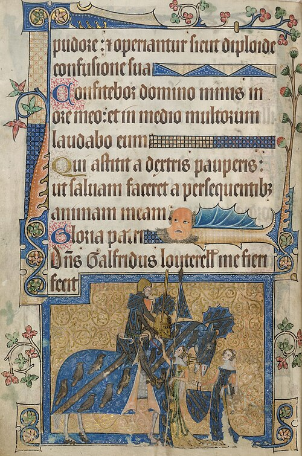
Source A: A 15th-century English manuscript illumination showing peasant agricultural laborers
toiling in the fields. The vast majority of Europeans lived in localized poverty, completely
oblivious to global trade.
If a traveler from another planet had visited Earth in the year 1450, Western Europe would not
have looked like the center of the world. In fact, it would have appeared as an impoverished,
cold, and isolated periphery on the outer western edge of Eurasia.
While later
generations assumed Europe was always powerful, the mid-15th century reality was stark:
England and France were exhausted after the hundred-year conflict of the Hundred Years' War,
and populations were still recovering from the devastation of the Black Death. An ordinary
European peasant lived in a dark, smokey, single-room hut made of wattle and daub (woven
sticks covered in mud) with a thatched roof, sharing the dirt floor with pigs and chickens to
stay warm during freezing winters. Their diet was monotonous, consisting almost entirely of
'pottage'—a thick, bland stew of boiled cabbage, peas, and oats.
Ordinary Europeans
rarely traveled more than five miles from their birthplace. European kingdoms had few precious
minerals, limited manufacturing, and produced almost nothing that merchants in Asia or Africa
wished to buy.
[[SRC_MARKER:L0_Task_0_0]]Q1. Study Source A. What does this contemporary illumination suggest about the daily
reality and living standards of ordinary people in Western Europe around 1450?

The Silk Road trade network: overland caravan routes in red connecting Central Asia to
Constantinople, and maritime spice routes in blue. The Ottoman capture of Constantinople cut
Europe off from overland transit.
Although ordinary Europeans lived in poverty, wealthy monarchs, nobles, and churchmen were
desperate for luxury goods from the East: fine silk and porcelain from China, and exotic
spices like pepper, cloves, and cinnamon from India and the Moluccas. For centuries, these
goods traveled overland along the ancient
Silk Roads.
However,
directly between Western Europe and Asia stood the rising superpower of the Islamic world: the
Ottoman Empire. On 29 May 1453, 21-year-old Sultan Mehmed II shattered the
ancient stone walls of Constantinople using massive bronze cannons. Mehmed transformed the
city into
Istanbul, the jewel of the Muslim world, and seized control of the
ultimate crossroads connecting European trade to the East.
🌍 Western Europe
(Desperate for Spices)
🐪 The Silk Road
(Vast Global Wealth)
For European merchants in Venice, Genoa, and London, this was a disaster. The Ottomans slapped
heavy taxes on European traders and restricted access to Asian routes. Western Europe was
effectively locked out.
[[SRC_MARKER:L0_Source_2]]
Source B: Eyewitness Diary of Nicolò Barbaro (May 1453)
On the twenty-ninth of May, 1453, the last day of the siege, our Lord God decided to deliver
the city into the hands of the Turks... The blood flowed in the city like rainwater in the
gutters after a sudden storm. The corpses were thrown into the sea like melons floating
along a canal... The Turks entered with such fury that all Christians who resisted were put
to the sword.
Source B: Eyewitness Diary of Nicolò Barbaro (May 1453)
"On the twenty-ninth of May, 1453, the last day of the siege, our Lord God decided to
deliver the city into the hands of the Turks... The blood flowed in the city like
rainwater in the gutters after a sudden storm. The corpses were thrown into the sea like
melons floating along a canal... The Turks entered with such fury that all Christians who
resisted were put to the sword."
— Adapted from the diary of Nicolò Barbaro, a Venetian merchant
trapped inside Constantinople.
[[SRC_MARKER:L0_Task_2_0]]Q2. Study Source B. Why might a Venetian merchant like Nicolò Barbaro have had a biased
and particularly panicked view of the Ottoman capture of Constantinople?
Source C
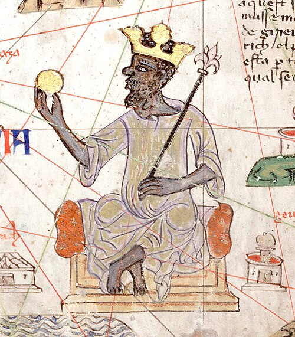
Source C: A detail from the Catalan Atlas (1375) showing Mansa Musa, Emperor of Mali, holding
a golden sceptre and a massive gold nugget. European cartographers acknowledged West Africa as
the undisputed fountain of global gold.
If Western Europe was an impoverished outpost, where was global wealth and power concentrated
in 1450?
1. West Africa: Kingdoms of Gold and BronzeSub-Saharan Africa was home to sophisticated, fabulously wealthy civilizations. The
Empire of Mali sat atop vast gold reserves that supplied the Mediterranean
world. Just a century earlier, Mali's emperor,
Mansa Musa, undertook a
pilgrimage to Mecca with dozens of camels bearing pure gold, giving away so much in Cairo that
the value of gold plummeted for a decade. Further south in modern Nigeria, the Oba (King) of
the
Kingdom of Benin ruled an immense metropolis protected by thousands of
miles of earthwork walls—structures larger than the Great Wall of China. Benin's royal
artisans produced world-famous cast-bronze plaques using the intricate lost-wax technique.
2. Ming Dynasty China: The Industrial GiantAt the eastern end of the globe lay
Ming China, a state of over 100
million people. China was the technological and manufacturing powerhouse of the earth,
producing silk, porcelain, and cast iron. Centuries before Europe, China invented gunpowder,
paper money, movable-type printing, and the magnetic compass. Between 1405 and 1433,
Admiral Zheng He commanded seven colossal imperial 'Treasure Fleets'—vessels
five times larger than Columbus's
Santa Maria—patrolling the Indian Ocean and trading
as far as East Africa.
Source D

Source D: An authentic 16th-century cast-bronze relief plaque from the royal palace of the Oba
of Benin, displaying advanced metallurgical casting and regal court hierarchy.
[[SRC_MARKER:L0_Task_4_0]]Q3. Study Sources C and D. How do these two sources challenge traditional Eurocentric
assumptions that pre-colonial Africa was 'uncivilized' or poor?
For generations, older school textbooks claimed that European explorers sailed across the
oceans after 1492 because Europe was intellectually superior, uniquely adventurous, or
destined to 'discover' the world. Modern historians strongly challenge this Eurocentric
myth:
Historian Perspective: Professor Peter Frankopan (The Silk Roads, 2015)
"For thousands of years, the pulse of the earth beat not in Europe, but along the Silk
Roads... Europe was an outpost, a small region on the edge of the great continent of
Eurasia. In 1450, the true wealth, science, and military power of the world lay firmly in
the East and in Africa."
The Core Truth: Exploration Out of DesperationUnderstanding
1450 fundamentally reframes world history. Western Europe did not launch maritime expeditions
because it was wealthy or dominant;
Europe sailed out of sheer economic desperation. Blockaded by the formidable
Ottoman Empire and starving for African gold and Asian spices, Europeans were forced to take
desperate risks across uncharted oceans to find a maritime backdoor to the riches of the East.
[[SRC_MARKER:L0_Task_5_0]]Q4. Explain TWO reasons why a global traveler in 1450 would have considered Asia and
Africa far more powerful and wealthy than Western Europe.
Q5. Explain why Europe was not the centre of global wealth and power in 1450.
L2: How did religious conflict trigger global exploration (1517–1588)?[[SRC_MARKER:L1_Start]]
Learning Objectives
Explain how the Protestant Reformation shattered European unity after 1517 and turned
overseas exploration into an ideological war.
Analyze the role of Elizabethan privateers in challenging Catholic Spain's global silver
monopoly.
Evaluate how the defeat of the Spanish Armada (1588) marked a turning point in Britain’s
imperial ambitions.
Do Now: Previous Knowledge
1. What was the overarching name for the ancient trade network connecting
Asia to Europe?
2. Which major empire expanded to block overland European trade routes in
1453?
3. What city was captured by Sultan Mehmed II in 1453?
4. What West African kingdom was known for its detailed bronze plaques in
the 15th century?
5. Why did the capture of Constantinople force European nations to look
for new trade routes?
Vocabulary Check
The Golden Sentence: Choose TWO terms from the word bank. Write ONE
grammatically sophisticated, historically accurate sentence connecting them using a
causal conjunction (because, although, or consequently):
Protestant Reformation | Indulgence | Treaty of Tordesillas
(1494) | Privateer | Spanish Armada (1588) |
Circumnavigation
Teacher Model / Pupil Sentence:

Source A: Map of the Treaty of Tordesillas (1494). Mediated by Pope Alexander VI, this treaty
drew a meridian dividing the entire non-European world exclusively between Catholic Spain
(west) and Catholic Portugal (east).
To understand why English sailors risked their lives in the uncharted waters of the Atlantic,
we have to look back to Germany in 1517. A Catholic monk named
Martin Luther nailed his
95 Theses to a church door in
Wittenberg, protesting rampant corruption within the Catholic Church—particularly the sale of
indulgences (certificates sold to forgive sins and shorten time in
Purgatory).
Luther’s defiance ignited the
Protestant Reformation,
shattering European religious unity and dividing the continent into two mortal enemies:
-
Catholic Powers: Dominated by the vast Spanish Empire of the Habsburgs
and the Papacy in Rome, possessing immense wealth and colossal armies.
-
Protestant Powers: A collection of northern European territories, Dutch
rebels, and eventually England after King Henry VIII broke with the Pope
in 1534 to establish the Church of England.
This religious fracture immediately spilled into the global oceans. Back in 1494, Pope
Alexander VI had brokered the
Treaty of Tordesillas, drawing an imaginary
line down the Atlantic Ocean. The Pope declared that all newly discovered lands to the west
belonged exclusively to Catholic Spain, while lands to the east belonged to Catholic Portugal.
Catholic Spain claimed a complete, divine monopoly over the wealth of the Americas.
As
a Protestant nation, England flatly rejected papal authority. English merchants and captains
refused to accept that the Pope had the right to lock them out of the New World. In September
1568, this brewing hostility erupted into bloodshed at the Mexican port of
San Juan de Ulúa. English captains
Francis Drake and
John Hawkins sailed into the port to repair their storm-damaged ships under a
signed truce with the Spanish Viceroy. Viewing all Protestant Englishmen in American waters as
illegal heretics, the Spanish ambushed the squadron with heavy naval artillery. Drake barely
escaped aboard the battered
Judith, leaving dozens of English sailors to be executed
or imprisoned by the Spanish Inquisition. Drake did not view this ambush as a business
dispute; he saw it as a holy war. He vowed personal vengeance against King Philip II and the
Catholic Church, turning the Atlantic into an ideological battleground.
[[SRC_MARKER:L1_Task_0_0]]Q1. Study Source A and read Act 1. Why did the Protestant Reformation and the Pope's
division of the world make violent naval conflict between England and Spain
inevitable?
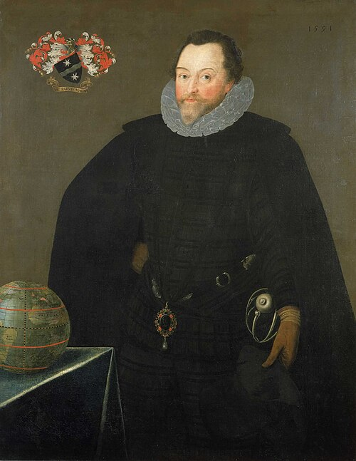
Source B: Portrait of Sir Francis Drake (1591) by Marcus Gheeraerts the Younger. Drake rests
his hand on a terrestrial globe, wearing the "Drake Jewel" presented to him by Queen Elizabeth
I.
When
Queen Elizabeth I took the English throne, she faced an existential
dilemma. England was deeply divided, financially impoverished, and lacked a standing royal
navy capable of matching Spain’s colossal fleet. Meanwhile, King Philip II of Spain was
extracting tons of silver from the mines of Potosí in Bolivia, using this imperial wealth to
fund Catholic armies across Europe.
Elizabeth could not afford an open, declared
war against Spain. Instead, she waged an asymmetric "cold war" at sea using
privateers. A privateer was an armed merchant captain granted a royal
license—known as a
Letter of Marque—empowering them to attack, board, and
plunder enemy vessels during wartime. To Elizabeth, privateers like Francis Drake, John
Hawkins, and Walter Raleigh were cheap, patriotic freedom fighters who filled her empty
treasury with captured silver while draining Spain’s military budget. To King Philip II and
the Spanish, they were ruthless Protestant pirates and heretics led by the terrifying
El Draque ("The Dragon").
Between 1577 and 1580, Drake
pulled off the most daring naval raid in history. Sailing into the Pacific on the
Golden Hind, where Spanish galleons sailed completely unarmed because they felt
totally safe, Drake plundered Spanish ports along Peru and Chile. Off the coast of Ecuador, he
captured the Spanish treasure galleon
Nuestra Señora de la Concepción (nicknamed the
Cacafuego), seizing 26 tons of silver bullion, 80 pounds of gold, and thirteen chests
of royal coins. Drake then completed the second circumnavigation of the globe in human
history. When he dropped anchor in Plymouth in 1580, Elizabeth boarded his ship and knighted
him on deck—a direct, calculated insult to King Philip II.
[[SRC_MARKER:L1_Task_1_0]]Q2. Study Source B and the written evidence. How did the Spanish Catholic perspective
of Francis Drake differ from the English Protestant perspective, and what does this
reveal about the religious nature of the conflict?

Source C: Contemporary map (1588) by Robert Adams showing the Armada’s voyage up the Channel,
the scattering off Calais, and the disastrous retreat around the stormy coasts of Scotland and
Ireland.
By 1587, King Philip II’s patience ran out. Enraged by Drake’s relentless piracy, Elizabeth’s
military support for Dutch Protestant rebels, and the execution of the Catholic
Mary, Queen of Scots in 1587, Philip decided to conquer England once and for
all.
In May 1588, Philip launched the
Spanish Armada (the
Grande y Felicísima Armada): 130 massive warships carrying 30,000 soldiers and 2,400
cannons. Philip’s master plan was to sail up the English Channel, join forces with the Duke of
Parma’s veteran Spanish army in the Spanish Netherlands, land in Kent, overthrow Elizabeth,
and restore England to Catholicism by force.
The Armada sailed in a formidable,
tightly packed
crescent (half-moon) formation that made boarding actions
nearly impossible. However, the English countered with superior naval tactics. Commanded by
Lord Howard of Effingham and Sir Francis Drake, English ships were lower, faster "race-built"
galleons carrying heavy, long-range naval guns that could reload much faster than Spanish
cannons.
The turning point came on the midnight of 7 August 1588 off Calais. The
English unleashed eight
fireships—old wooden vessels packed with tar, pitch,
and gunpowder set ablaze—and allowed the tide to carry them directly into the crowded Spanish
fleet. Terrified Spanish captains cut their heavy anchor cables in panic and scattered into
the darkness. The following morning, at the
Battle of Gravelines, the English
battered the disorganised Spanish ships with close-range broadsides.
Defeated and
unable to turn back against southwest winds, the surviving Armada fled north around the jagged
coasts of Scotland and Ireland. Ferocious Atlantic gales—celebrated by Protestants as the
miraculous
"Protestant Wind"—smashed dozens of Spanish ships against the
rocks. Fewer than half of Philip’s ships and only 10,000 men ever returned to Spain.
[[SRC_MARKER:L1_Task_2_0]]Q3. Explain TWO main reasons why the Spanish Armada failed to invade England in 1588,
evaluating whether the defeat was caused primarily by English tactical skill or Spanish
misfortune.

Source D: The Armada Portrait of Queen Elizabeth I (c. 1588, attributed to George Gower,
Woburn Abbey version). Packed with imperial symbolism, it depicts Elizabeth claiming global
mastery following the defeat of Spain.
The defeat of the Spanish Armada was a profound psychological and geopolitical watershed.
While the Anglo-Spanish war dragged on until 1604, the victory of 1588 shattered the myth of
Spanish naval invincibility and unleashed an explosion of English national pride and imperial
ambition.
No historical artifact captures this moment better than
The Armada Portrait of Queen Elizabeth I (c. 1588, attributed to George
Gower). Commissioned to celebrate the victory, the painting is packed with sophisticated
political and religious iconography:
-
The Globe and North America: Elizabeth’s right hand rests purposefully on
the globe, with her fingers spread directly over North America. The message was
unmistakable: England was no longer content to stay on its island; it was claiming the
right to colonize the Americas and challenge Spain for global dominion.
-
The Contrasting Windows: The window behind her right shoulder shows the
English fleet sailing in calm, golden sunlight, while the window behind her left shoulder
shows the Spanish Armada being battered and wrecked against stormy rocks by God’s
"Protestant Wind".
-
The Crown and the Mermaid: An imperial closed crown sits beside her,
asserting that England was an empire answerable to no foreign Pope or Emperor, while a
carved mermaid on her throne symbolizes mastery over the wild oceans.
-
The Pearls: Elizabeth’s dress is encrusted with over 800 pearls,
symbolizing virginity, purity, and the precious oceanic wealth brought back by global
privateers.
For centuries, British historians celebrated 1588 as a divine miracle that founded the
British Empire. Modern historians, however, emphasize that the Armada did not instantly create
an empire—England still had no permanent American colonies. Instead, 1588 gave the English the
confidence and the
ideological justification to build one. As writer Richard
Hakluyt argued, colonisation was now England’s sacred duty: to spread Protestantism, liberate
Indigenous peoples from Spanish brutality, and bring glory to the realm.
[[SRC_MARKER:L1_Task_3_0]]Q4. Study Source D (The Armada Portrait). How does the artist use specific visual
symbols in this painting to project Elizabeth's royal authority and announce England's
arrival as a global maritime empire?
⚔️ Side Quest: The Horrors of Scurvy
 Source E: Historical medical documentation illustrating the horrifying
effects of scurvy on a sailor's gums and teeth.
Source E: Historical medical documentation illustrating the horrifying
effects of scurvy on a sailor's gums and teeth.
The "Golden Age of Exploration" is often painted as a heroic era of brave captains
claiming glory. But for the ordinary sailors on ships like Francis Drake's
Golden Hind, life was a living nightmare of disease and malnutrition. The
greatest enemy was not the Spanish navy, but scurvy—a terrifying disease
caused by a severe lack of Vitamin C on voyages lasting months without fresh fruit or
vegetables. Because fresh supplies spoiled quickly, sailors survived on rock-hard,
weevil-infested "hard tack" biscuits and salted beef that had often turned green. Without
Vitamin C, the human body cannot produce collagen: a sailor's gums would swell, turn
purple, and rot; their teeth would fall out; old healed scars would miraculously rip open
again; and they would slowly bleed to death internally. On many Elizabethan expeditions,
over half the crew died of scurvy before ever engaging the enemy in combat.
Think-Pair-Share: Q5 Why did Elizabethan propaganda and later history textbooks
emphasize the 'patriotic glory' of captains like Francis Drake, while ignoring the grim
reality that over half of ordinary sailors died from scurvy and malnutrition?
|
1. My Thoughts (Think)
|
2. Partner's Thoughts (Pair)
|
|
|
Q6. Explain how religious conflict between Catholics and Protestants pushed England into
global exploration and naval rivalry with Spain between 1517 and 1588.
L3: Trade or takeover: How did early encounters turn into empire?[[SRC_MARKER:L2_Start]]
Learning Objectives
Explain how joint-stock corporations (like the East India Company and Virginia Company)
funded early English expansion.
Compare the early English colonial encounters in North America (Jamestown) with mercantile
trade in Mughal India.
Evaluate the turning point where peaceful commercial trade shifted into territorial
takeover and empire.
Do Now: Previous Knowledge
1. In what year did Martin Luther post his 95 Theses?
2. What name was given to English sailors, like Francis Drake, who were
given legal permission to attack Spanish ships?
3. What was the name of the Spanish King who launched the Armada against
England in 1588?
4. What weather event destroyed much of the fleeing Spanish Armada off
the coast of Scotland?
5. Why did Queen Elizabeth I use privateers instead of the Royal Navy to
challenge Spain in the Americas?
Vocabulary Check
Conceptual Classification: Categorise the terms from the word bank into
the two historical boxes below:
Joint-Stock Company | East India Company (EIC) | Royal Charter
| Factory (Trading Post) | Mughal Empire | Jamestown
(1607)
Power, Governance & Warfare
Economy, Trade & Society
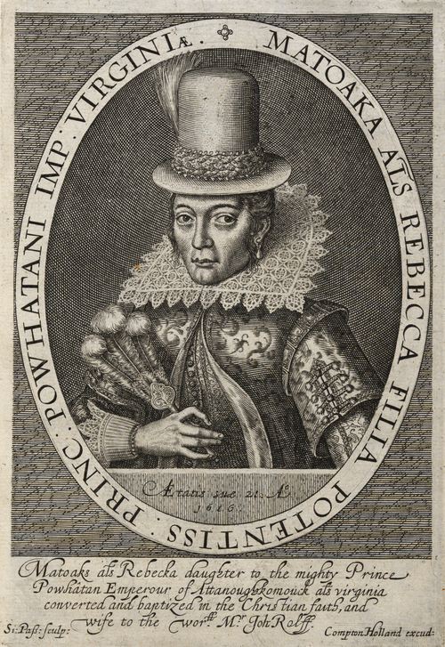
Source A: Engraving of Matoaka (Pocahontas) in London (1616) by Simon van de Passe.
Commissioned by the Virginia Company, this portrait was designed as corporate propaganda to
persuade English investors that the colony was civilized and profitable.
Unlike the Spanish Empire, where the King directly financed conquistadors and royal invasion
fleets, early English global expansion was fundamentally commercial and corporate. In the
early seventeenth century, the English Crown was cash-strapped and deeply in debt. English
monarchs could not afford to finance expensive transatlantic voyages or overseas armies from
the royal treasury.
To solve this problem, wealthy English merchants developed a
revolutionary financial invention: the
Joint-Stock Company. Instead of one
wealthy merchant risking total ruin if a ship sank, hundreds of private investors pooled their
capital to buy shares in a corporate venture. If a voyage succeeded, profits were divided
among shareholders; if a ship sank, each investor lost only their initial investment. This
dramatically spread financial risk and mobilized unprecedented private capital.
To
protect these investments, the Crown issued formal legal decrees known as
Royal Charters. A Royal Charter granted a company a strict legal monopoly
over trade in a specific part of the world, along with extraordinary semi-governmental powers:
the right to establish colonies, mint private currency, build armed fortresses, and raise
private security forces. On 31 December 1600, Queen Elizabeth I chartered the
East India Company (EIC), granting a 15-year monopoly on all English trade in
Asia. Six years later, in 1606, King James I chartered the
Virginia Company of London to establish settlements in North America.
To
convince cautious London aristocrats to invest in these ventures, chartered companies launched
aggressive marketing campaigns. In 1616, the Virginia Company brought
Matoaka (known to the English as Pocahontas), daughter of the paramount chief
of the Powhatan Confederacy, to London. Dressed in high-status Jacobean silk and an
aristocratic lace ruff, she was presented to King James I and depicted in engravings as a
living advertisement, demonstrating to wealthy investors that Virginia was a "civilized",
peaceful, and commercially viable land worthy of their gold.
[[SRC_MARKER:L2_Task_0_0]]Q1. Study Source A and read Act 1. Why did the English Crown rely on private
joint-stock companies (like the Virginia Company and East India Company) to explore the
world, and how did these companies market their ventures to investors?
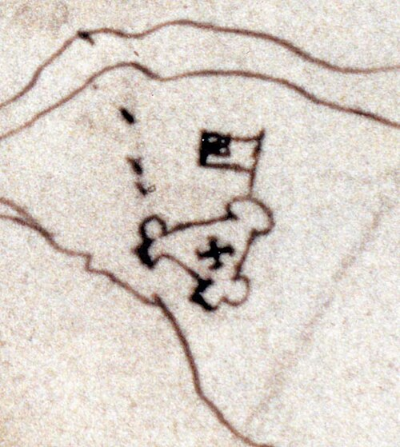
Source B: Architectural plan of James Fort (1608), sketched by Spanish spy Pedro de Zúñiga.
The triangular wooden palisade featured raised corner bastions with artillery, showing that
settlers prioritized defense and military fortification.
In May 1607, three Virginia Company ships carrying 104 men and boys sailed up the James River
in Chesapeake Bay and established
Jamestown—England's first permanent
settlement in North America. The early years of the colony were a catastrophic struggle for
survival. Chosen for its defensibility against Spanish naval raids, the site was a swampy
peninsula plagued by mosquitoes, malaria, and brackish, undrinkable water. Most of the
original settlers were "gentlemen" who refused to perform manual labour or farm, expecting to
find gold just as the Spanish had in Peru.
During the horrific winter of
1609–1610—known as the
"Starving Time"—relations with the indigenous Powhatan
Confederacy collapsed. The Powhatan cut off food trade and besieged the settlement. Trapped
inside their wooden fort, settlers starved: only 60 of the 500 colonists survived the winter,
surviving on horses, dogs, rats, snakes, shoe leather, and, in documented cases,
cannibalism.
The colony was ultimately rescued by two developments. First, in 1612,
settler John Rolfe introduced sweet Spanish tobacco seeds, discovering that Virginia's soil
was ideally suited for tobacco cultivation. Tobacco became a lucrative cash-crop that flooded
European markets with addictive "brown gold", ensuring the Virginia Company's financial
survival. Second, to defend their valuable crop and protect against Powhatan archers, the
settlers constructed
James Fort: a heavy, triangular wooden palisade with
circular corner bastions mounting heavy cannons.
However, tobacco cultivation
required vast amounts of fertile land and quickly exhausted the soil. As tobacco profits
soared, settlers cleared forests, invaded native hunting grounds, and seized agricultural
land. Despite the brief peace that followed the marriage of John Rolfe and Matoaka in 1614,
English land hunger made peace impossible. In North America, English expansion became an
aggressive
territorial takeover: building defensive forts, clearing forests,
and violently displacing Indigenous populations to secure land.
[[SRC_MARKER:L2_Task_1_0]]Q2. Study Source B (Plan of James Fort) and read Act 2. What does the triangular,
heavily armed design of James Fort reveal about why early English encounters in North
America rapidly shifted from trade into territorial takeover?
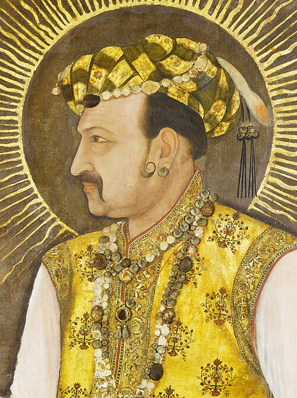
Source C: Mughal miniature portrait of Emperor Jahangir (c. 1615–1620). Depicted with an
imperial golden halo and opulent pearl necklaces, this image reflects the immense wealth and
authority of the Mughal Empire when Sir Thomas Roe arrived as an ambassador.
While English settlers in Virginia were aggressively seizing land and building wooden
fortresses, the East India Company was experiencing a completely different reality on the
other side of the globe. In 1600, India was ruled by the colossal
Mughal Empire—one of the wealthiest and most sophisticated superpowers in
world history. The Mughal Empire ruled over 100 million subjects, commanded armies with
thousands of war elephants and cannons, and produced a staggering 25% of the entire world's
manufactured output, particularly luxury calico cottons, fine silks, and spices.
By
comparison, Stuart England was a minor, peripheral island with a population of just 4 million
and an economy contributing less than 2% of world GDP. English mariners who sailed into the
Indian Ocean had zero military advantage. They could not threaten, conquer, or seize territory
from the mighty Mughal emperors.
In 1615, King James I dispatched diplomat
Sir Thomas Roe as England's first official ambassador to the court of Mughal
Emperor
Jahangir at Ajmer. When Roe arrived, he was overwhelmed by the
breathtaking magnificence of the Mughal court. Jahangir sat on imperial thrones draped in
emeralds, rubies, and pearls, wearing cloth-of-gold robes that made English courtiers look
impoverished.
Recognizing England's total military and economic inferiority, Sir
Thomas Roe understood that conquest was impossible. Instead, Roe had to adopt a strategy of
humble, polite subservience. For four years, Roe prostrated himself before Jahangir, presented
European gifts (clocks, fine English mastiff hunting dogs, and world maps), and flattered the
Emperor. In 1619, Jahangir finally granted Roe a
firman (royal decree) permitting
English merchants to establish a small, rented coastal warehouse—known as a
factory (trading post)—at the port of Surat. In India, the English could not
act as conquerors; they were humble merchants begging for permission to trade.
[[SRC_MARKER:L2_Task_2_0]]Q3. Compare Source B (James Fort in Virginia) and Source C (Emperor Jahangir). Why did
early English encounters in North America result in immediate fortified takeover,
whereas in Mughal India the English were forced to remain humble, polite
traders?
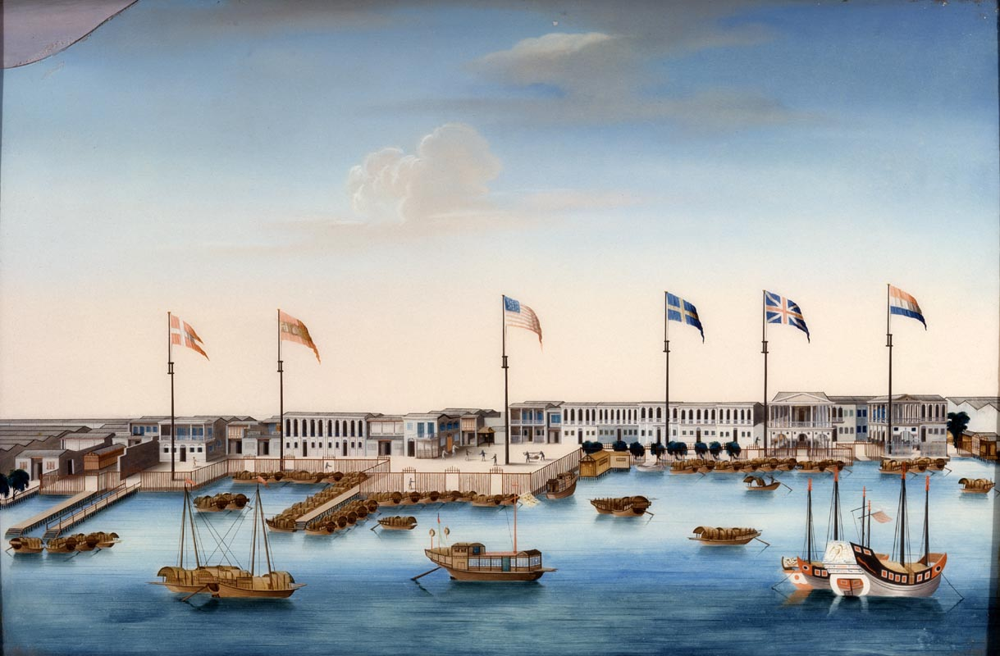
Source D: View of the Thirteen Factories in Canton, China (c. 1800). For centuries, European
merchants were strictly confined to narrow coastal warehouses ("factories") outside Chinese
city walls, showing that early global trade was negotiated on Asian terms.
For over a century, the East India Company adhered strictly to Sir Thomas Roe's advice:
"A war and traffic [trade] are incompatible... Let this be received as a rule, that if you
will profit, seek it at sea, and in quiet trade."
Throughout the seventeenth century, English merchants remained confined to fortified coastal
warehouses—such as Bombay, Madras, and Calcutta in India, and the famous
Thirteen Factories in Canton, China, where European merchants were strictly
locked outside the city walls by Qing imperial authorities.
However, in the
mid-eighteenth century, the geopolitical landscape changed radically. Following the death of
Mughal Emperor Aurangzeb in 1707, the central authority of the Mughal Empire fractured into
dozens of rival, warring regional kingdoms. Sensing an opportunity to eliminate their French
commercial rivals and secure tax revenues, the East India Company began militarizing its
trading posts. The EIC recruited and trained thousands of Indian soldiers—known as
sepoys—equipping them with modern European flintlock muskets and field
artillery.
The decisive turning point occurred in 1757 at the
Battle of Plassey. Commanded by Robert Clive, a small army of 3,000 British
troops and sepoys defeated the 50,000-strong army of Siraj ud-Daulah, the Nawab of Bengal,
after bribing the Nawab's chief commander, Mir Jafar. In 1765, the shattered Mughal Emperor
was forced to sign the Treaty of Allahabad, granting the private East India Company the
Diwani: the legal right to collect all agricultural taxes from 20 million
people in Bengal.
Historians fiercely debate the nature of this transition. In
1883, imperial historian Sir John Robert Seeley famously claimed that the British Empire was
acquired
"in a fit of absence of mind"—arguing that peaceful merchants were
accidentally dragged into Indian politics to protect trade. Modern historians, such as Shashi
Tharoor (
Inglorious Empire, 2017), strongly reject this, arguing that the East India
Company was always an aggressive, profit-driven capitalist machine that used bribery, military
violence, and economic exploitation to ruthlessly conquer India for corporate gain.
[[SRC_MARKER:L2_Task_3_0]]Q4. Study Source D and read Act 4. How do historians disagree over whether the British
Empire developed "accidentally" through peaceful trade, or as an "inevitable takeover"
driven by corporate greed and military force?
⚔️ Side Quest: The Invasion of the Pigs
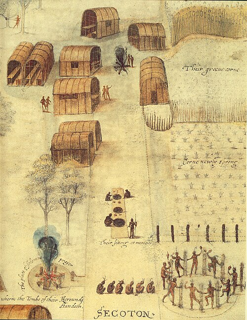
Source E: John White's authentic 1585 watercolor painting of the
Algonquian village of Secotan, showing their carefully managed, unfenced corn fields.
When history textbooks discuss the English colonization of North America, they focus
almost entirely on muskets, land treaties, and tobacco. But one of the most destructive
biological weapons the English brought to Virginia was the domesticated pig. The
Algonquian Powhatan people did not build fences; they carefully managed open forest lands
and planted unfenced polyculture fields of maize, beans, and squash. The English settlers,
however, allowed their livestock to roam freely in the woods. Hundreds of feral pigs
multiplied rapidly, invading native villages, rooting up delicate native edible plants,
devouring winter seed stores, and trampling coastal clam beds that Native Americans
depended on for winter protein. For the Indigenous peoples, English colonization was not
merely a political or military invasion; it was an ecological catastrophe that literally
consumed their food supply from the ground up.
Think-Pair-Share: Q5 How does this ecological detail ("The Invasion of the Pigs") change
our historical understanding of why Native Americans became hostile toward the Jamestown
settlers?
|
1. My Thoughts (Think)
|
2. Partner's Thoughts (Pair)
|
|
|
Q6. Explain why early English global encounters between 1600 and 1750 shifted from
peaceful mercantile trade into armed takeover and empire.
L4: James I and the Gunpowder Plot: Why was religious division so volatile?[[SRC_MARKER:L3_Start]]
Learning Objectives
Explain how the Elizabethan legacy and King James I’s broken promises heightened Catholic
desperation by 1604.
Analyse the conspiracy hatched by Robert Catesby and Guy Fawkes beneath Parliament and
evaluate the discovery through the Monteagle Letter.
Evaluate competing historical interpretations regarding whether Robert Cecil discovered or
manufactured the conspiracy.
Vocabulary Check
Spot the Deliberate Error: Read the statement below. One historical
fact or vocabulary concept has been deliberately falsified. Underline the error and
explain the accurate historical reality below:
Recusant | Divine Right of Kings | Undercroft | The
Rack | Penal Laws | State Entrapment
"In 1605, King James I abandoned the Divine Right of Kings and rewarded every Catholic
Recusant with seats in Parliament, completely eliminating the need for Penal Laws."
Teacher Model / Historical Correction:
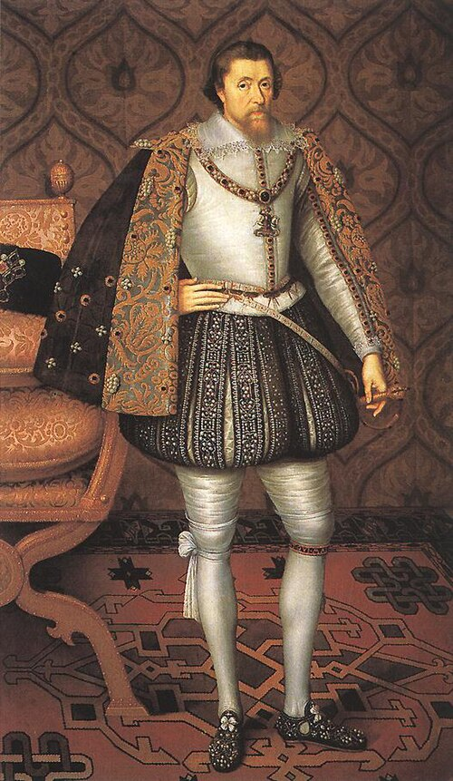
Source A: Portrait of King James I (c. 1606) by John de Critz. James believed passionately in
the Divine Right of Kings, yet his decision in 1604 to expel Catholic priests and collect
crushing recusancy fines triggered radical unrest.
[1.1] In seventeenth-century England, religion was not a private
matter of personal conscience; it was the foundation of national security, monarchical
authority, and daily survival. Decades of religious upheaval following the Protestant
Reformation and the 1588 Spanish Armada had created an atmosphere of deep paranoia between
Protestants and Catholics. English Catholics who refused to attend compulsory Church of
England Sunday services were branded as
recusants.
[1.2]
Under Queen Elizabeth I, the Crown imposed staggering recusancy fines of £20 a month—an
astronomical sum designed to financially cripple Catholic landowners and force them into
submission. Harbouring an ordained Catholic priest was legally classified as high treason,
punishable by the agonizing public death of hanging, drawing, and quartering. Priests lived in
perpetual terror, celebrating secret Latin masses at dawn and hiding in cramped secret
compartments known as
priest holes, ingeniously built into manor walls by
master carpenter Nicholas Owen.
[1.3] When the
childless Queen Elizabeth I died in March 1603, English Catholics felt a surge of desperate
optimism. The throne passed to King James VI of Scotland (now
King James I of
England), the son of the executed Catholic martyr Mary, Queen of Scots, who had hinted that he
would not "persecute any that will be quiet." However, once crowned in London, James was
politically trapped: fiercely believing in the
Divine Right of Kings and
anxious to prove his Protestant orthodoxy to a suspicious Parliament, James abruptly reversed
course. In February 1604, James issued a royal proclamation expelling all Catholic priests
from England and ruthlessly collected back-taxes on unpaid recusancy fines. For a zealous
minority of young Catholic gentlemen, this betrayal proved that peaceful reform was dead.
[[SRC_MARKER:L3_Task_0_0]]Q1. Study Source A and read Act 1. Using paragraphs [1.2] and [1.3], explain why
English Catholics felt deeply betrayed by King James I, and how this deepened religious
volatility in Jacobean England.

Source B: Contemporary Dutch print (1605) by Crispijn van de Passe the Elder, showing Robert
Catesby, Guy Fawkes, Thomas Percy, and fellow plotters conspiring in broad-brimmed hats and
dark cloaks.
[2.1] In May 1604, five militant Catholic gentlemen met secretly
at the Duck and Drake inn near the Strand in London. Their charismatic leader was
Robert Catesby, a tall, persuasive Northamptonshire gentleman whose father
had been imprisoned by Elizabeth and whose family estate had been bled dry by recusancy fines.
Catesby argued that petty rebellions and local uprisings were useless; only a catastrophic
blow at the heart of government could overthrow the Protestant regime. His audacious scheme
was to blow up the House of Lords during the State Opening of Parliament, wiping out King
James I, his eldest sons Prince Henry and Prince Charles, the bishops, and the entire ruling
Protestant aristocracy in a single second.
[2.2] To
execute this mass demolition, Catesby enlisted an experienced mercenary:
Guido (Guy) Fawkes. Born into a prominent Protestant family in York, Fawkes
had converted to Catholicism in his youth and spent ten brutal years fighting for the Spanish
Army of Flanders. He was a seasoned military engineer with expert knowledge of mining,
sapping, and gunpowder. Using the alias
John Johnson, Fawkes posed as the
humble servant of co-conspirator Thomas Percy. In March 1605, Percy used his royal connections
to lease a ground-floor
undercroft (cellar) situated directly beneath the
House of Lords chamber, where peers and the King would assemble.
[2.3]
Under cover of darkness, the plotters ferried
36 barrels of gunpowder—roughly
2.5 tonnes of high explosive—across the River Thames from Lambeth, concealing them beneath
massive piles of firewood, coal, and iron bars designed to act as shrapnel. The conspirators
planned a synchronized nationwide coup: while Fawkes ignited a slow-burning match in London
and escaped to Flanders by ship, conspirators led by Sir Everard Digby would launch an armed
Catholic rebellion in the Midlands. They intended to storm Coombe Abbey, kidnap King James’s
nine-year-old daughter
Princess Elizabeth, proclaim her Catholic Queen, and
marry her to a Catholic nobleman. However, because Parliament was repeatedly postponed due to
plague outbreaks, the plot dragged on for eighteen months, forcing Catesby to recruit more
wealthy backers and dangerously widening the circle of secrets.
[[SRC_MARKER:L3_Task_1_0]]Q2. Study Source B and read Act 2. Using paragraphs [2.1] and [2.2], explain Robert
Catesby’s operational plan, and analyse how the visual representation in Source B shaped
public perceptions of Catholic conspirators.
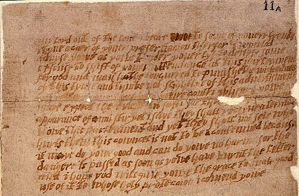
Source C: The Monteagle Letter (October 1605), National Archives SP 14/19/1. Written in
disguised handwriting, this unsigned letter warned Monteagle to avoid Parliament’s opening.
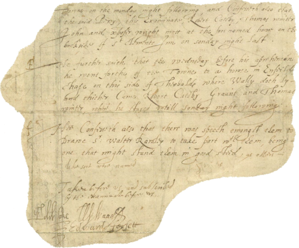
Source D: Confession document (November 1605) showing Guido Fawkes’s firm initial signature
compared with his faint, trembling signature executed after severe stretching on the rack.
[[SRC_MARKER:L3_Source_2]]
Transcript: The Anonymous Warning Letter to Lord Monteagle (26 October 1605)
my lord out of the love i beare to some of youere frends i have a caer of youre
preservacion. therfor i would advyse yowe as yowe tender youre lyf to devyse some excuse to
shift of youre attendance at this parleament for god and man hathe concurred to punishe the
wickednes of this tyme and thinke not slightlye of this advertisment but retyere youre self
into youre contri wheare yowe maye expect the event in safti for thowghe theare be no
apparance of anni stir yet i saye they shall receyve a terrible blowe this parleament and
yet they shall not seie who hurts them. this councel is not to be contemned because it maye
do yowe goode and can do yowe no harme for the dangere is passed as soon as yowe have burnt
the letter...
[3.1] On the evening of 26 October 1605, the conspiracy began to
unravel. Catholic peer
Lord Monteagle was dining at his home in Hoxton when a
servant handed him an anonymous letter delivered by a cloaked stranger in the street. The
unsigned letter warned Monteagle to avoid Parliament because "god and man hathe concurred to
punishe the wickednes of this tyme" and that Parliament would "receyve a terrible blowe".
Monteagle immediately rode to Whitehall Palace and handed the letter to
Robert Cecil, Earl of Salisbury, King James’s brilliant Chief Minister and
Spymaster. Rather than rushing to search Parliament immediately, Cecil waited deliberately for
ten days until King James returned from a hunting trip in Royston, allowing the King to
"miraculously divine" the explosive meaning of a "blow".
[3.2]
Just after midnight on the morning of
5 November 1605, Sir Thomas Knyvett led
an armed search of the undercroft beneath the House of Lords. There, standing beside 36
barrels of gunpowder hidden under firewood, they arrested Guy Fawkes, dressed in boots and
spurs and carrying a pocket watch, touchwood, and slow matches. Fawkes was dragged before King
James in his bedchamber, remaining defiantly unrepentant. When asked by a Scottish nobleman
what he intended to do with so much gunpowder, Fawkes coldly replied:
"To blow you Scotch beggars back into your native mountains!"[3.3]
Fawkes was imprisoned in the Tower of London. On 6 November, King James signed a royal warrant
authorizing the use of torture:
"The gentler tortours are to be first used unto him, and so by degrees proceeding to the
worst."
Fawkes was subjected to
the rack for several agonizing days. His physical
destruction is graphically preserved in official court papers: his initial bold signature
("Guido Fawkes") deteriorated into a faint, broken scrawl ("Guido"), after which his hand gave
out completely. Breaking under torture, Fawkes revealed the names of his co-conspirators.
[3.4]
The remaining plotters fled in panic to the Midlands, making a desperate last stand on 8
November at
Holbeche House in Staffordshire. Surrounded by the Sheriff of
Worcester’s armed posse, Robert Catesby and Thomas Percy were shot dead with a single musket
ball while standing back-to-back. The surviving conspirators were brought to London, tried for
high treason in Westminster Hall, and publicly hanged, drawn, and quartered in Old Palace Yard
in January 1606.
[[SRC_MARKER:L3_Task_2_0]]Q3. Study Sources C and D alongside Act 3. Using paragraphs [3.1], [3.2], and [3.3],
analyse how the discovery of the Monteagle Letter and the forensic evidence of Fawkes’s
signatures illuminate the methods used by the Jacobean state to investigate and punish
high treason.
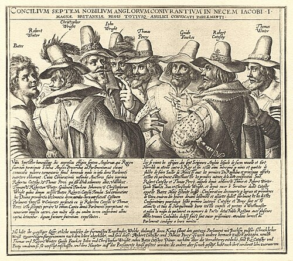
Source E: Contemporary print showing the gruesome public execution of the surviving Gunpowder
Plotters in Old Palace Yard, Westminster (January 1606).
[4.1] In the centuries since 1605, the Gunpowder Plot has stood
as one of the most contentious episodes in British history. While Jacobean government
propaganda presented the discovery as a miraculous act of God saving Protestant England,
modern historians remain divided over the true role played by King James’s Chief Minister,
Robert Cecil. Was the plot an authentic Catholic conspiracy that nearly destroyed the English
state, or was it an elaborate sting operation manipulated by the Jacobean secret service?
Read
the two competing historical interpretations below:
Interpretation 1: The Genuine Terror Plot
"The Gunpowder Plot was a genuine, desperate terror conspiracy conceived and organised
entirely by Robert Catesby and his inner circle of disaffected Catholic gentlemen. The
plotters procured their own gunpowder, leased the undercroft through Thomas Percy’s
royal connections, and came within hours of catastrophic success. While Robert Cecil
exploited the plot masterfully after receiving the Monteagle letter to destroy the
Catholic missionary network, there is no credible evidence that he invented the
conspiracy or orchestrated it from the start. The conspirators died fighting at Holbeche
House precisely because their violent mission was entirely real."
— Historian Antonia Fraser,
Faith and Treason: The Story of the Gunpowder Plot (1996)
Interpretation 2: The State Entrapment Thesis
"The Gunpowder Plot was an elaborate sting operation manipulated, if not actively
facilitated, by Robert Cecil, Earl of Salisbury. As head of the Jacobean secret service,
Cecil controlled the government gunpowder monopoly and had spies trailing Catesby’s
circle for months. By allowing 36 barrels into Parliament’s undercroft and
choreographing the ‘miraculous discovery’ through the convenient Monteagle
letter, Cecil manufactured a national panic that permanently blackened English
Catholicism, secured massive parliamentary taxes, and cemented his personal supremacy
over King James."
— Historian Francis Edwards,
The Gunpowder Plot: The Narrative of 1605 (1969)
[4.2] The consequences of the plot were immense.
Parliament passed the
Observance of 5th November Act 1605 (making annual
bonfire celebrations compulsory by law) and enacted the
Popish Recusants Act 1606, requiring Catholics to swear a humiliating Oath of
Allegiance and barring them from practicing law, medicine, or voting. Religious volatility had
hardened into permanent institutional discrimination.
[[SRC_MARKER:L3_Task_3_0]]Q4. Study Act 4 and compare Interpretation 1 and Interpretation 2. Using paragraphs
[4.1] and [4.2], explain which historian’s argument provides a more convincing
explanation of Robert Cecil’s role in the Gunpowder Plot.
Q5. How far do you agree with Interpretation 1 that the Gunpowder Plot was a genuine,
independently hatched Catholic conspiracy, rather than an entrapment scheme orchestrated
or manipulated by Robert Cecil?
L5: Who controlled Britain? The Ideological Battle[[SRC_MARKER:L4_Start]]
Learning Objectives
Explain how Charles I’s belief in the Divine Right of Kings and eleven years of Personal
Rule provoked civil war with Parliament.
Analyse how the creation of the New Model Army transformed the war and led to the
unprecedented trial of the King for high treason.
Evaluate the revolutionary consequences of the Regicide and the establishment of the
English Commonwealth.
Vocabulary Check
The Odd One Out: Select THREE terms that share a close historical
connection. Identify which ONE remaining term is the 'Odd One Out' in this lesson, and
explain your historical reasoning:
Personal Rule | Divine Right of Kings | New Model Army
| Regicide | The Commonwealth | Levellers
Teacher Model / Pupil Reasoning:
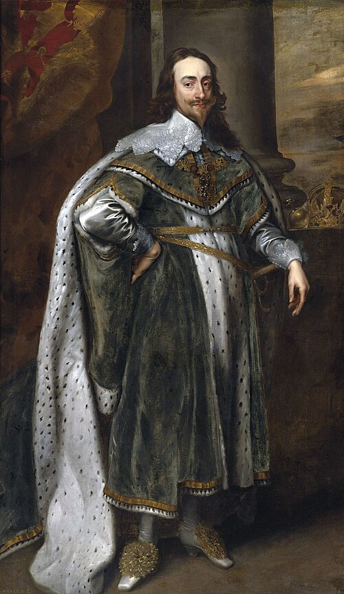
Source A: King Charles I depicted in three viewpoints by Anthony van Dyck (1635), painted to
guide the Roman sculptor Bernini. The portrait projects the refined elegance, dignity, and
sacred authority Charles believed inherent in the Crown.
[1.1] When King Charles I ascended the throne in 1625, he
inherited not only his father James I’s crown, but also an unshakeable belief in the
Divine Right of Kings. Charles believed that kings were God’s lieutenants on
earth, and that questioning royal command was equivalent to defying the Almighty. However,
Charles was politically rigid, fiercely defensive of his royal prerogative, and married to a
French Roman Catholic princess, Queen Henrietta Maria, which stoked deep Puritan paranoia in
Parliament that the court was secretly plotting to return England to Rome.
[1.2]
Frustrated by Parliament’s refusal to grant him unconditional taxes, Charles dismissed
Parliament in 1629 and embarked on eleven years of
Personal Rule (labeled by
his furious critics as the "Eleven Years’ Tyranny"). To raise money without parliamentary
consent, Charles revived obscure feudal laws. Most notoriously, he extended
Ship Money—a coastal defense tax traditionally levied only on port towns
during wartime—to every inland county during peacetime. Gentlemen like John Hampden refused to
pay, arguing that taxation without parliamentary representation was tyranny. Meanwhile,
Charles’s Archbishop of Canterbury, William Laud, clamped down on Puritan preaching,
introduced decorated stone altars and rail fences into churches, and brutally mutilated
Puritan critics, cutting off their ears and branding their cheeks in the pillory.
[1.3]
The crisis boiled over in 1637 when Charles tried to force a new Anglican prayer book onto the
Presbyterian Scots. Scotland erupted into open rebellion (the Bishops’ Wars), invading
northern England. Desperately bankrupt, Charles was forced to summon the Long Parliament in
1640 to raise war funds. Parliament, led by John Pym, seized control: they executed Charles’s
chief minister, abolished Ship Money, and declared that Parliament could not be dissolved
without its own consent. When Charles marched into the House of Commons with 400 armed
soldiers on 4 January 1642 to arrest five leading MPs for treason—only to find the "birds had
flown"—compromise was dead. In August 1642, Charles raised his royal standard at Nottingham:
the English Civil War had begun.
[[SRC_MARKER:L4_Task_0_0]]Q1. Study Source A and read Act 1. Using paragraphs [1.1] and [1.2], explain how King
Charles I’s belief in the Divine Right of Kings and his financial policies during his
Personal Rule alienated the English political nation.
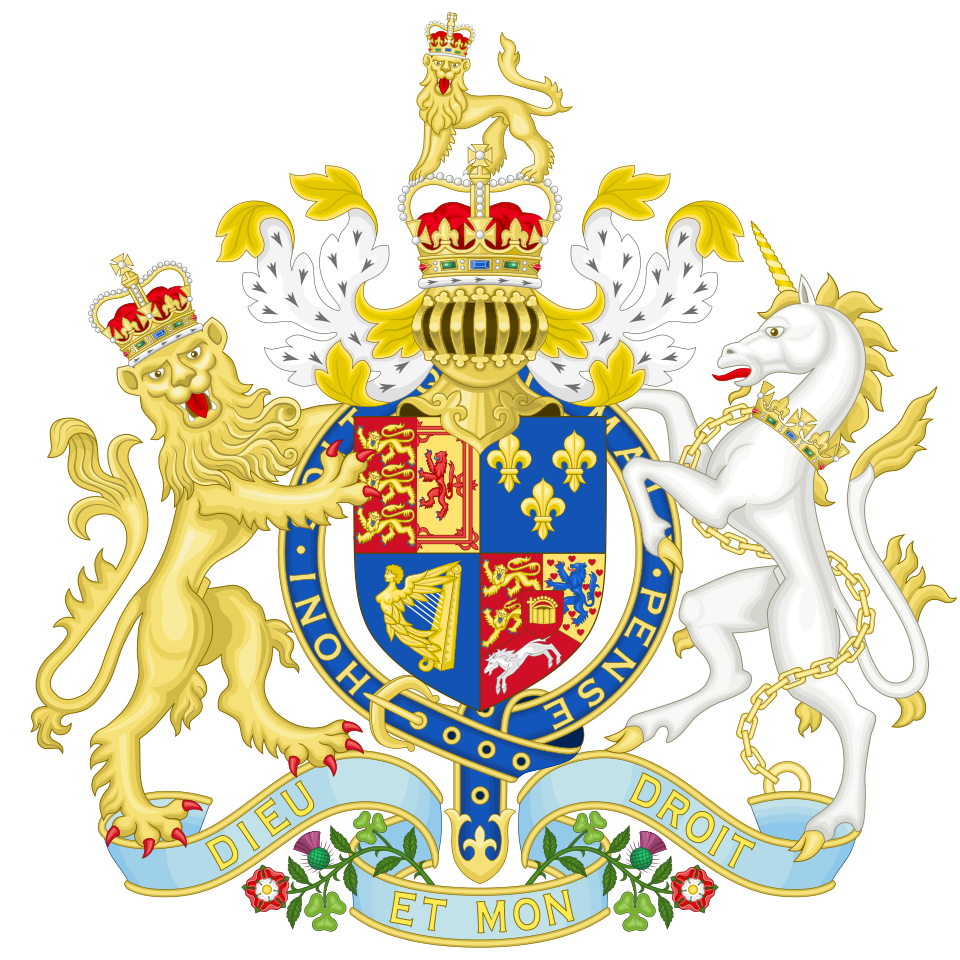
Source B: Contemporary woodcut depicting the clash between Royalist and Parliamentarian
cavalry during the English Civil War (1642–1651).
[2.1] The English Civil War pitted the
Royalists (derisively nicknamed "Cavaliers" for their aristocratic equestrian
style and dashing long locks) against the
Parliamentarians (mocked as
"Roundheads" because Puritan apprentices kept their hair closely cropped). The conflict
divided families, towns, and regions: the North and West remained predominantly Royalist,
while the prosperous South, the naval ports, and the mercantile powerhouse of London rallied
behind Parliament. At early battles like Edgehill (1642), Parliament’s forces struggled
against dashing Royalist cavalry commanded by Charles’s German nephew, Prince Rupert.
[2.2]
The decisive turning point arrived in early 1645 when Parliament passed the
Self-Denying Ordinance and created the
New Model Army.
Unlike traditional regional militias whose soldiers refused to march beyond their home county
borders, the New Model Army was England’s first professional, unified national force. Command
was entrusted to Sir Thomas Fairfax and a fiercely devout East Anglian squire named
Oliver Cromwell. Crucially, the New Model Army broke with centuries of
aristocratic privilege: promotion was based strictly on military competence and bravery rather
than noble bloodline. Cromwell famously declared:
"I had rather have a plain russet-coated captain that knows what he fights for, and loves
what he knows, than that which you call a gentleman and is nothing else."[2.3] The New Model Army was fueled by intense
Puritan religious fervor. Soldiers rode into battle singing biblical psalms, convinced they
were the chosen instruments of God fighting against the antichrist. At the
Battle of Naseby in June 1645, Cromwell’s disciplined cavalry (the
"Ironsides") routed the Royalist cavalry, while Parliament’s infantry crushed the King’s foot
soldiers. Naseby effectively shattered Charles I’s military power. The King surrendered to the
Scots in 1646, who handed him over to Parliament. Yet even in captivity, Charles plotted
continuously, playing Parliament, the Scots, and the Army against one another. In 1648,
Charles secretly forged an alliance with conservative Scots, triggering a Second Civil War.
For Cromwell and the Army, this second betrayal was unforgivable: the King was no longer
merely a misguided sovereign, but a
"man of blood" who had needlessly shed the blood
of his own people against the manifest judgment of God.
[[SRC_MARKER:L4_Task_1_0]]Q2. Study Act 2. Using paragraphs [2.2] and [2.3], explain why the creation of the New
Model Army was a military and ideological turning point in the English Civil
War.
[[SRC_MARKER:L4_Source_2]]
Source C: Death Warrant of King Charles I (29 January 1649)
Whereas Charles Stuart, King of England, is and standeth convicted, attainted and condemned
of High Treason and other high Crimes, and sentence upon Saturday last was pronounced
against him by this Court to be put to death by the severing of his head from his body, of
which sentence execution yet remaineth to be done: These are therefore to will and require
you to see the said sentence executed in the open street before Whitehall upon the morrow,
being the thirtieth day of this instant month of January, between the hours of ten in the
morning and five in the afternoon of the same day with full effect...
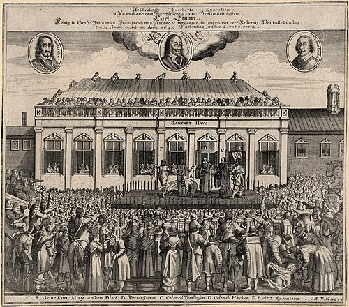
Source D: Contemporary broadsheet print published in Frankfurt (1649) depicting the execution
of King Charles I outside Whitehall Banqueting House. Thousands of stunned spectators watch as
the executioner raises the severed head, surrounded by heavy cavalry.
[3.1] In December 1648, the Army moved decisively to seize
political power. Colonel Thomas Pride stationed soldiers at the doors of the House of Commons,
physically arresting or barring over 140 moderate MPs who favored negotiating a peaceful
settlement with the King. This purge left behind a radical minority of roughly 60 Puritan MPs
known as the
Rump Parliament. On 6 January 1649, the Rump Parliament passed
an ordinance establishing a
High Court of Justice to put King Charles I on
trial for high treason. This was an unprecedented, radical act: in English common law, treason
was defined as an act committed against the King. How could the King commit treason against
himself?
[3.2] The trial opened on 20 January 1649
inside the ancient oak-roofed Westminster Hall. Dressed in solemn black satin and wearing the
jewel of Saint George, Charles refused to remove his hat—a customary sign of submission—and
flatly refused to enter a plea. Charles challenged the court’s legal authority:
"I would know by what power I am called hither... I would know by what authority, I mean
lawful; there are many unlawful authorities in the world, thieves and robbers by the
highways... Remember I am your King, your lawful King, and what sins you bring upon your
heads, and the judgment of God upon this land."
Despite Charles’s eloquent defense, Lord President John Bradshaw presided over a foregone
conclusion. On 27 January, the court pronounced sentence, declaring Charles Stuart to be a
"tyrant, traitor, murderer, and public enemy to the good people of this nation" and
condemning him to death.
[3.3] On the bitterly cold
morning of
Tuesday, 30 January 1649, Charles was led onto a black-draped
wooden scaffold erected outside the Banqueting House at Whitehall. Charles wore two heavy
shirts so he would not shiver in the winter chill, lest the spectators believe he was
trembling in fear. On the scaffold, Charles delivered his final speech, declaring:
"A subject and a sovereign are clean different things... I go from a corruptible to an
incorruptible crown."
Charles laid his neck on the low executioner’s block and gave the signal by stretching out his
hands. With a single strike of the heavy axe, the masked executioner severed his head. A loud,
collective groan rose from the assembled thousands of stunned spectators as the executioner
held the dripping head aloft. The unthinkable had occurred: England had committed
regicide.
[[SRC_MARKER:L4_Task_2_0]]Q3. Study Sources C and D alongside Act 3. Using paragraphs [3.1] and [3.2], explain
Charles I’s constitutional defence during his trial, and analyse why the execution sent
shockwaves across Europe.
[4.1] In the immediate aftermath of the Regicide, Parliament
passed sweeping legislation that dismantled the centuries-old constitutional architecture of
England. In February 1649, the House of Lords was formally abolished as "useless and
dangerous", and in May 1649, England was proclaimed a republic:
The Commonwealth. For the first and only time in its history, England had no
king. Power was ostensibly held by the Rump Parliament and a Council of State, but ultimate
authority rested firmly in the hands of Oliver Cromwell and the New Model Army’s officer
corps.
[4.2] The revolution unleashed radical
political and religious ideas that terrified the wealthy landowners in Parliament. Foremost
among these radicals were the
Levellers, led by John Lilburne, Richard
Overton, and William Walwyn. In their manifesto,
An Agreement of the People, the
Levellers demanded universal male suffrage, biennial parliaments, total equality under the
law, and freedom of religion. Even more radical were the
Diggers (True
Levellers), led by Gerrard Winstanley, who occupied common land at St George’s Hill in Surrey,
declaring that private property was sinful and that the earth should be "a common treasury for
all." To Cromwell and the grandees of the army, such radicalism threatened total social
anarchy. In May 1649, Cromwell ruthlessly crushed a Leveller mutiny in the army at Burford,
Oxfordshire, executing three ringleaders in the churchyard and locking down military
discipline.
[4.3] The Commonwealth quickly discovered
that governing without a monarch was fraught with instability. Frustrated by the corrupt,
slow-moving Rump Parliament, Cromwell marched into the House of Commons with musketeers in
April 1653, shouting:
"You have sat too long for any good you have been doing lately... Depart, I say; and let us
have done with you. In the name of God, go!"
In December 1653, Cromwell was sworn in as
Lord Protector under a written
constitution (the Instrument of Government). Although offered the royal crown in 1657,
Cromwell declined it; yet in practice, his rule during the Protectorate was more absolute than
Charles I’s had ever been, dividing England into eleven military districts governed by Puritan
Major-Generals who closed theatres, banned horse racing, and even outlawed the celebration of
Christmas. When Cromwell died in September 1658, the republic collapsed into chaotic military
infighting. In May 1660, the exiled son of the executed king, King Charles II, was joyfully
welcomed back to London: the monarchy was restored.
[[SRC_MARKER:L4_Task_3_0]]Q4. Study Act 4. Using paragraphs [4.1], [4.2], and [4.3], explain whether the
establishment of the Commonwealth and Protectorate achieved genuine political liberty
for the people of England.
Q5. Explain two consequences of the trial and public execution of King Charles I in
January 1649. [8 marks]
L6: Who controlled Britain? The Economic Shift[[SRC_MARKER:L5_Start]]
Learning Objectives
Explain how Oliver Cromwell’s Navigation Acts (1651) established a state policy of
mercantilism and challenged Dutch naval hegemony.
Analyse how the founding of the Bank of England (1694) and the National Debt created a
powerful Fiscal-Military State.
Evaluate the extent of economic change and continuity in Britain’s domestic wealth and
global colonial exploitation by 1720.
Vocabulary Check
The Golden Sentence: Choose TWO terms from the word bank. Write ONE
grammatically sophisticated, historically accurate sentence connecting them using a
causal conjunction (because, although, or consequently):
Mercantilism | Navigation Acts | Fiscal-Military State
| Bank of England | Royal African Company | Consumer
Revolution
Teacher Model / Pupil Sentence:
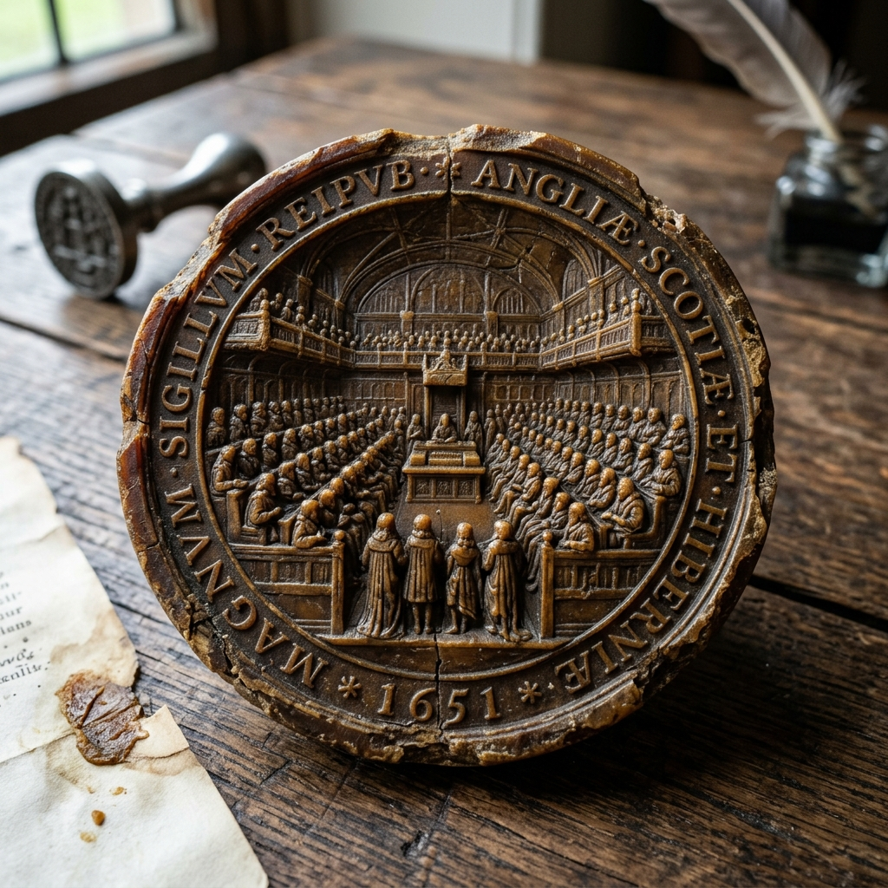
Source A: The Great Seal of the Commonwealth (1651), engraved by Thomas Simon. The obverse
depicts the House of Commons in session, while the reverse proudly showcases the English
battle fleet, illustrating how maritime power was central to the new republic’s identity.
[1.1] In the mid-seventeenth century, the greatest commercial
rival to England was not a Catholic monarchy like Spain or France, but the Protestant Dutch
Republic. With a merchant fleet larger than all other European nations combined, Dutch "fluyt"
cargo vessels dominated global shipping, undercutting English merchants by carrying Virginia
tobacco and Caribbean sugar at cheaper freight rates. For Oliver Cromwell and the Commonwealth
government, this Dutch supremacy was unacceptable. England adopted the aggressive economic
theory of
mercantilism—the belief that the total volume of global trade was
fixed, and that one nation could only grow rich and powerful by seizing commercial territory
and market share from its rivals.
[1.2] In October
1651, the English Parliament passed the landmark
Navigation Act. This statute
struck directly at the Dutch freight trade: it decreed that goods grown or manufactured in
Asia, Africa, or America could be imported into England or its colonies
only on
English-built ships, owned by English masters, and crewed by at least 75% English sailors.
Furthermore, European goods could only enter England on English ships or ships of the country
that produced the goods. The act was a deliberate declaration of commercial warfare designed
to channel all imperial wealth through London while starving rival nations of trade
profits.
[1.3] The Dutch immediately recognised that
the Navigation Act would strangle their merchant economy, leading directly to the
Anglo-Dutch Wars (a series of three brutal naval conflicts fought between
1652 and 1674). England invested heavily in expanding its permanent battle fleet, constructing
massive 80-gun "ships of the line" that fought in disciplined lines of battle. Although the
Dutch scored stunning humiliations against England—such as Admiral de Ruyter’s daring raid on
the River Medway in 1667, where the Dutch burned English warships and towed away the flagship
Royal Charles—the Navigation Acts remained firmly in place. By the 1670s, the Royal
Navy had grown into the most formidable maritime force in Europe, shielding a rapidly
expanding global trade network.
[[SRC_MARKER:L5_Task_0_0]]Q1. Study Source A and read Act 1. Using paragraphs [1.1] and [1.2], explain how Oliver
Cromwell’s Navigation Act of 1651 reflected mercantilist economic theory, and analyse
how this changed England’s maritime position.

Source B: The central courtyard of London’s Royal Exchange (late 17th century), crowded with
international merchants beneath statues of English monarchs, negotiating overseas trade,
shipping insurance, and joint-stock shares.
[2.1] Following the Restoration of King Charles II in 1660,
London experienced an unprecedented explosion of commercial and mercantile activity. At the
center of this financial empire stood the
Royal Exchange on Cornhill. First
opened under Elizabeth I and grandly rebuilt in classical stone by Edward Jerman after being
incinerated in the Great Fire of London (1666), the Exchange featured a massive open-air
courtyard surrounded by covered arcades. Here, over 2,000 merchants, brokers, sea captains,
and factors gathered every weekday between noon and two o’clock to trade global commodities,
buy insurance for perilous ocean voyages, and buy and sell stock in overseas chartered
ventures.
[2.2] Alongside the formal floor of the
Royal Exchange, a new, informal financial ecosystem was born in the bustling
coffee houses of the City of London. Introduced to Britain in the 1650s,
coffee was heralded as the drink of sobriety and clear-headed business, contrasting sharply
with the drunkenness of traditional alehouses. Different professions congregated in specific
establishments: shipowners, sea captains, and merchants met at
Edward Lloyd’s Coffee House on Lombard Street, discussing shipping news,
marine casualties, and underwriting cargo insurance (laying the foundation for the
world-famous insurance market Lloyd’s of London). Nearby, stockjobbers congregated at
Jonathan’s Coffee House in Change Alley, trading shares in joint-stock
ventures and posting regular price lists.
[2.3] This
commercial boom created a new urban elite: the "moneyed interest." For the first time in
English history, immense fortunes were being made not by owning vast landed estates or
inherited noble titles, but through fluid commercial trade, paper credit, maritime investment,
and speculative shares. By 1690, London was rapidly eclipsing Amsterdam as the undisputed
banking, shipping, and commercial crossroads of the Atlantic world.
[[SRC_MARKER:L5_Task_1_0]]Q2. Study Source B and read Act 2. Using paragraphs [2.1] and [2.2], explain how the
Royal Exchange and coffee houses created a new financial ecosystem that altered the
nature of wealth in seventeenth-century England.
[[SRC_MARKER:L5_Source_2]]
Source C: Royal Charter of the Governor and Company of the Bank of England (27 July 1694)
William and Mary, by the Grace of God, King and Queen of England, Scotland, France and
Ireland... Know ye, that We, in pursuance of the late Act of Parliament entitled "An Act for
granting to their Majesties several Rates and Duties upon Tunnage of Ships and Vessels, and
upon Beer, Ale, and other Liquors, for securing certain Recompenses and Advantages to such
persons as shall voluntarily advance the sum of Fifteen Hundred Thousand Pounds"... Do
hereby create, constitute, declare, and appoint that the said Subscribers shall be one Body
Politick and Corporate, by the Name of The Governor and Company of the Bank of England...
[3.1] In 1688, the political landscape shifted dramatically with
the
Glorious Revolution. The Catholic King James II was deposed, and the
Protestant Dutch prince William of Orange and his wife Mary (daughter of James II) were
invited by Parliament to take the throne. William III immediately plunged England into the
Nine Years’ War (1688–1697) against the superpower of Europe: Louis XIV’s
France. However, warfare had become staggeringly expensive: arming fleets of 100-gun wooden
warships, fortifying overseas ports, and maintaining standing armies of 80,000 men required
cash reserves that traditional taxation could not possibly provide. France was three times
larger and four times more populous than England, yet Louis XIV had to resort to desperate
tax-farming and forced loans that nearly ruined his kingdom.
[3.2]
England’s secret weapon was an institutional breakthrough known to historians as the
Financial Revolution. In 1694, a Scottish merchant named William Paterson
proposed a radical scheme: a group of wealthy City of London merchants would lend £1.2 million
in gold and silver directly to the government at a guaranteed 8% annual interest rate. In
exchange, Parliament granted these investors a royal charter to incorporate as the
Bank of England. Crucially, the loan was backed not by the personal promises
of the King (who might default or die), but by Parliament, which guaranteed payment through
dedicated customs and excise taxes. This birth of the
National Debt meant
that Britain could borrow vast sums of money at low, stable interest rates (typically 4–6%)
because investors knew the British government was legally bound never to default on its
loans.
[3.3] The Bank of England transformed the
British economy by issuing standardized paper
banknotes that circulated
alongside gold guineas and silver shillings, enormously expanding the money supply and
liquidity. Combined with the Civil List Act of 1697, which separated the King’s private
household expenditure from the public funds of the nation, Britain became the world’s foremost
Fiscal-Military State. With deep financial credit, the Royal Navy could
out-build, out-equip, and out-last the French and Spanish fleets across the Atlantic,
Mediterranean, and Indian Oceans.
[[SRC_MARKER:L5_Task_2_0]]Q3. Read Source C (The Bank of England Royal Charter extract) alongside Act 3. Using
paragraphs [3.1] and [3.2], explain why the founding of the Bank of England and the
creation of the National Debt gave Britain a military and financial advantage over its
European rivals.
[4.1] Britain’s spectacular commercial wealth between 1660 and
1720 was inextricably entangled with the violent human exploitation of transatlantic chattel
slavery. In 1672, King Charles II granted a royal monopoly charter to the
Royal African Company (RAC). Led by the King’s brother, James, Duke of York
(the future King James II), the RAC’s governing board included leading nobles, court
politicians, and philosophers like John Locke. Between 1672 and 1731, the Royal African
Company shipped more African men, women, and children into transatlantic slavery than any
other single institution in human history—transporting an estimated 212,000 captive Africans,
of whom over 44,000 died during the horrific Middle Passage. The enslaved people were branded
on the chest with the company’s initials ("RAC") or the Duke of York’s mark ("DY") before
being loaded into cargo holds.
[4.2] The enslaved
Africans trafficked by the RAC were forced to labor on expanding sugar plantations in Barbados
and Jamaica, and tobacco plantations in Virginia. The commodities they produced flooded into
British ports like London, Bristol, and Liverpool, catalyzing a profound
Consumer Revolution. In 1650, sugar and tobacco were rare, expensive luxuries
reserved exclusively for aristocrats; by 1720, they had become daily staples consumed by
ordinary artisans, merchants, and laborers across Britain. Coffee houses, tea shops, and
tobacconists proliferated in every major English town, creating massive commercial fortunes
for British importers, grocers, and shopkeepers.
[4.3]
The domestic profits of this colonial trade seeped into every corner of the British economy.
Wealth extracted from the Caribbean paid for elegant Georgian townhouses in London’s West End,
funded civic institutions, capitalized banks, and subsidized country estates. While British
citizens celebrated their newfound political liberties and commercial modernity following the
Glorious Revolution, this prosperity was directly subsidized by the violent dehumanization of
hundreds of thousands of enslaved Africans in the Caribbean and West Africa.
[[SRC_MARKER:L5_Task_3_0]]Q4. Study Act 4. Using paragraphs [4.1] and [4.2], explain how the activities of the
Royal African Company fueled Britain’s domestic Consumer Revolution, and evaluate the
moral contradiction at the heart of Britain’s commercial expansion.
Q5. Explain why Britain underwent a financial and commercial revolution between 1651 and
1720. [12 marks]
L7: What were the mechanics of the Transatlantic Slave Trade?[[SRC_MARKER:L6_Start]]
Learning Objectives
Explain the three stages of the Triangular Trade and analyse how British manufactured
commodities fueled human trafficking on the West African coast.
Analyse the physical and psychological brutality of the Middle Passage using forensic
primary evidence from the Brookes slave ship diagram.
Evaluate the utility of contemporary sources and plantation records for investigating the
dehumanisation and industrial exploitation of enslaved people in the Caribbean.
Vocabulary Check
Conceptual Classification: Categorise the terms from the word bank into
the two historical boxes below:
Triangular Trade | Middle Passage | Barracoon |
Chattel Slavery | The Plantation Complex | Branding
Power, Governance & Warfare
Economy, Trade & Society

Source A: Cape Coast Castle, Gold Coast (modern Ghana). Built by the British Royal African
Company, this massive stone fortification housed subterranean dungeons where thousands of
captive Africans were imprisoned before embarkation.

Reference Map: Diagram of the Triangular Trade routes across the Atlantic Ocean: British
manufactured goods (Leg 1) traded for captive Africans (Leg 2 / Middle Passage), who produced
sugar, tobacco, and cotton shipped back to Britain (Leg 3).
[1.1] Between 1500 and 1807, the Atlantic world was bound
together by a vast, circular oceanic trading network known as the
Triangular Trade. The system was divided into three distinct legs. On the
First Leg (the Outward Passage), British merchant ships set sail from major
ports like Bristol, Liverpool, and London loaded with manufactured goods: woolen cloth, brass
pans, iron bars, glass beads, gunpowder, and hundreds of thousands of flintlock muskets.
Sailing south along the Atlantic winds, they arrived along the West African coast (stretching
from modern Senegal down to Angola).
[1.2] Along the
coastline, European trading companies constructed heavily armed stone fortifications known as
"slave castles." The most formidable British outpost was
Cape Coast Castle in
the Gold Coast (modern Ghana). These castles were not merely military fortresses; they were
industrial warehouses designed for human commodification. British agents traded their
manufactured goods and firearms with local African rulers and merchant brokers in exchange for
captured human beings. The influx of European firearms created a vicious cycle of violence:
African kingdoms equipped with British muskets launched predatory raids against neighbouring
interior villages to capture war captives, knowing that if they failed to capture prisoners to
sell, they themselves might be conquered and enslaved by rival militarized states.
[1.3]
Once sold to British factors, captive Africans were stripped of their clothing, family names,
and identities. They were inspected like cattle by ship doctors, and those deemed fit were
violently branded on the chest or shoulder with red-hot branding irons bearing the corporate
monogram of the British company (such as "RAC" for the Royal African Company). The captives
were then forced down into suffocating, lightless underground dungeons called
barracoons carved into the castle foundations. In these damp stone pits, up
to 1,000 men and women were chained in complete darkness without sanitation or ventilation for
weeks or months, waiting for slave vessels to arrive. When the ships dropped anchor, the
captives were led through the narrow stone "Door of No Return", loaded into canoes through
crashing ocean surf, and ferried out to the waiting slave vessels.
[[SRC_MARKER:L6_Task_0_0]]Q1. Study Source A and the Triangular Trade reference map alongside Act 1. Using
paragraphs [1.1], [1.2], and [1.3], explain how the mechanics of the First Leg and
coastal slave castles transformed captive human beings into trade commodities.

Source B: Technical stowage plan of the Liverpool slave ship Brookes, commissioned and
published by the Plymouth Abolitionist Committee in 1788 under the Slave Trade Act. It
illustrates 482 captives crammed into the hold, laying bare the chilling reality of
tight-packing.
[2.1] The
Middle Passage was the second leg of
the Triangular Trade: a grueling, 4,000-mile ocean voyage across the Atlantic lasting between
six and twelve weeks depending on the trade winds. For enslaved Africans, it was an
unimaginable descent into terror. British slave ship captains operated under two competing
commercial philosophies: "loose-packing" (carrying fewer captives in the belief that lower
mortality would maximize sale prices) and "tight-packing" (cramming the maximum conceivable
number of captives into the hold, calculating that sheer volume of bodies would outweigh the
high death toll from disease). Tight-packing overwhelmingly predominated among British
captains seeking maximum voyage profits.
[2.2] On
vessels like the Liverpool slave ship
Brookes, human beings were packed like
stacked lumber onto multi-tiered wooden shelves constructed in the lower cargo decks. Each
captive was allocated a space measuring approximately six feet in length by sixteen inches in
width, with less than three feet of vertical headroom between shelves—making it impossible to
stand or even sit upright. Men were shackled together in pairs at the wrists and ankles using
heavy iron irons, forced to lie spoon-fashioned on their sides on rough pine floorboards.
Below deck, the heat was suffocating, reaching over 40°C in tropical latitudes. The air was
thick with the stench of human vomit, sweat, diarrhea, and decomposing bodies. Diseases like
dysentery ("the bloody flux"), smallpox, measles, and ophthalmia (infectious blindness) ripped
through the unventilated holds. Sick or dead captives remained shackled to the living for
hours or days before being discovered by crewmen.
[2.3]
In good weather, captives were dragged on deck twice daily for twenty minutes and forced to
jump in their iron chains to the crack of a whip—a brutal exercise the sailors cynically
called "dancing the slaves"—in an attempt to keep their muscles from seizing up. Anyone who
refused to eat out of despair was forced to swallow boiling gruel using a horrific mechanical
iron mouth-screw called a
speculum oris, which cranked their jaws open and broke
their teeth. Historians estimate that between 1500 and 1870, over 12.5 million enslaved
Africans were forced onto slave ships; at least 1.8 to 2 million died during the nightmare of
the Middle Passage, their bodies cast unceremoniously into the Atlantic Ocean, creating shark
paths that followed slave vessels across the sea.
[[SRC_MARKER:L6_Task_1_0]]Q2. Study Source B and read Act 2. Using paragraphs [2.1] and [2.2], explain what
Source B reveals about the physical reality of "tight-packing" during the Middle
Passage, and assess its usefulness for a historian investigating British slave
ships.
[[SRC_MARKER:L6_Source_2]]
Source C: Eyewitness Account of a Kingston Slave Scramble (c. 1770s)
The ship being anchored, a day is appointed for the sale. The scramble is the most usual
method: the buyers agree upon a price per head for the men, women, and boys. A signal being
given by the firing of a gun, the doors of the yard are thrown open, and the purchasers rush
in at once with ferocity, with cords in their hands, seizing upon the poor wretches they
like best. The confusion and noise is not to be described, and the astonishment and terror
of the negroes is painted on their faces. Many families were on this occasion separated:
wives were torn from their husbands, and children from their mothers, screaming and clinging
to one another in an agony of grief...
[3.1] When surviving slave ships made landfall in Caribbean
ports such as Kingston in Jamaica or Bridgetown in Barbados, the commodification of human
beings reached its commercial peak. Before landing, captains attempted to disguise the
devastating physical toll of the Middle Passage to secure the highest auction prices. Enslaved
people were fed fresh food, forced to wash in saltwater, had their heads shaved, and had their
skin rubbed with palm oil and rust to give them a healthy, youthful shine. Deep open ulcers,
yaws, and dysentery wounds were plugged with oakum and gunpowder to conceal terminal illnesses
from prospective buyers.
[3.2] Enslaved Africans were
sold through several commercial methods. Wealthy planters pre-ordered entire "parcels" of
laborers directly from merchant agents. However, the most chaotic and terrifying sales method
was the
scramble. Planters and overseers paid a flat cash fee per head in
advance. At the sound of a beat of a drum or firing of a pistol, the doors of the ship’s deck
or dockside stockade were flung open, and crowds of eager white buyers rushed in
simultaneously with ropes and ribbons, grabbing and tying up whichever terrified captives they
could catch first. The screaming, panic, and chaos were overwhelming. Families, spouses, and
children who had survived the horrors of the ocean crossing together were violently torn
apart, purchased by different plantation owners, and scattered across different estates, never
to see each other again.
[3.3] Upon purchase, the new
owner legally registered the enslaved person as
chattel property. The
enslaved person’s African name—which carried deep spiritual, ancestral, and linguistic
meaning—was systematically erased and replaced with a mocking classical or English moniker
(such as "Caesar", "Pompey", or "Jack"). Under Caribbean slave codes, such as the
Barbados Slave Act of 1661 (which became the legal template for all English
colonial slave codes), an enslaved African was classified in law as a piece of real estate or
farm animal. If an overseer beat an enslaved person to death during "correction", it was not
classified as murder in law, because no one could be guilty of murdering their own property.
[[SRC_MARKER:L6_Task_2_0]]Q3. Read Source C (Eyewitness Account of a Kingston Slave Scramble) alongside Act 3.
Using paragraphs [3.1], [3.2], and [3.3], explain how slave auctions and the Barbados
Slave Act completed the legal and psychological transformation of humans into chattel
property.

Source D: 18th-century engraving of enslaved men and women cutting sugar cane under the
watchful eye of an armed overseer with a whip on an Antigua plantation. The image depicts the
disciplined gang system and physical exhaustion of harvest work.
[4.1] The ultimate destination for over 70% of enslaved Africans
carried on British ships was the
sugar plantation of the Caribbean,
particularly in Jamaica and Barbados. A sugar plantation was not a gentle pastoral farm; it
was a brutal, round-the-clock agro-industrial factory. Sugar cane cultivation was one of the
most physically punishing and dangerous forms of manual labor on earth. The workforce was
organized into a rigid
gang system under the watchful eyes of armed white
overseers and enslaved drivers carrying heavy cart-whips.
[4.2]
The "Great Gang"—consisting of the strongest young men and women—labored from dawn until dusk
in searing tropical heat, digging thousands of cane holes, planting cane tops, and carrying
heavy baskets of manure. During the five-month harvest season (from January to May), work
proceeded continuously day and night. Field hands slashed through dense, sharp-leafed cane
with heavy billhooks under constant threat of venomous snakes and severe puncture wounds. The
harvested cane had to be transported immediately to the boiling house before the sweet sap
fermented. Inside the boiling house, the heat was suffocating: heavy iron rollers crushed the
cane, frequently catching and crushing workers’ fingers and arms (requiring an axe to be kept
beside the roller to instantly sever an arm before the worker was dragged in entirely). In the
boiling room, workers stirred steaming vats of boiling molasses in toxic fumes, where a single
slip caused horrific, third-degree burns.
[4.3] The
human toll was catastrophic. British planters operated on a ruthless economic calculation: it
was cheaper to work enslaved people to death within seven to ten years and purchase fresh
captives from newly arrived slave ships than to allow enslaved families to survive and
reproduce naturally. Starvation diets, infectious tropical diseases, brutal floggings with the
cart-whip, and unceasing labor meant that the death rate in Jamaica dramatically exceeded the
birth rate throughout the eighteenth century. Between 1700 and 1807, over 800,000 enslaved
Africans were imported into Jamaica; yet when slavery was abolished in 1834, only 311,000
enslaved people remained alive. The sweet sugar that sweetened British tea cups was literally
purchased with African blood.
[[SRC_MARKER:L6_Task_3_0]]Q4. Study Source D and read Act 4. Using paragraphs [4.1], [4.2], and [4.3], explain
why sugar plantations were described as "agro-industrial factories", and explain why the
death rate of enslaved laborers was so catastrophic.
Q5. How useful are Source B (The Brookes Slave Ship Diagram) and Source D (The Antigua
Sugar Plantation Engraving) for an enquiry into the brutal mechanics of the Transatlantic
Slave Trade? [8 marks]
L8: How did enslaved Africans resist the Transatlantic Slave Trade?[[SRC_MARKER:L7_Start]]
Learning Objectives
Analyse the "spectrum of resistance" and explain how covert defiance, cultural
preservation, and work slowdowns enabled enslaved people to maintain their humanity.
Evaluate the military significance of Queen Nanny and the Jamaican Maroons, who forced the
British Empire into signing peace treaties in 1739.
Assess the historical agency of Black abolitionists, focusing on Olaudah Equiano and the
Sons of Africa, in shifting British public opinion against the slave trade.
Vocabulary Check
Spot the Deliberate Error: Read the statement below. One historical
fact or vocabulary concept has been deliberately falsified. Underline the error and
explain the accurate historical reality below:
Spectrum of Resistance | Maroons | Covert Resistance
| Guerrilla Warfare | Sons of Africa | Abolitionism
"Enslaved Africans submitted passively to their conditions without resistance, and the
Maroons were loyal British soldiers who helped plantation owners enforce strict order."
Teacher Model / Historical Correction:
[[SRC_MARKER:L7_Source_0]]
Source A: Diary of Jamaican Overseer Thomas Thistlewood (Excerpts, 1750–1760)
July 14, 1751: Caught Cudjoe having feigned sickness three days together; he had hid his hoe
in the brush... November 3, 1753: The Great Mill broke down this afternoon; found an iron
bolt jammed in the cog, undoubtedly thrown in by design to stop the boiling... March 18,
1756: Phibbah informs me that the negroes held a secret Obeah dance in the woods last night,
singing songs in the Coromantee tongue. Threatened them with thirty lashes each if
repeated...
[1.1] Resistance to chattel slavery did not begin with
parliamentary debates in London; it began on the very soil of the plantations every single
day. Because open, armed rebellion was punishable by horrifying public torture and
death—including being burned alive in iron cages or having limbs broken on the wheel—enslaved
Africans developed a sophisticated
spectrum of resistance centered on covert
defiance. Rather than meeting overseers in direct combat, enslaved workers weaponised subtle,
daily tactics that systematically eroded planter profits while preserving their own lives and
communities.
[1.2] Daily resistance took numerous
practical forms. Enslaved workers engaged in deliberate work slowdowns ("go-slows"),
coordinating their pace through call-and-response work songs that white overseers mistook for
happy contentment. Workers feigned illness during peak harvest season, deliberately mishandled
or "lost" heavy iron hoes and billhooks, and caused "accidental" breakdowns of expensive
sugar-crushing rollers by dropping iron spikes into the machinery. Enslaved women used their
deep botanical knowledge of native herbs (such as cassava root, wild ginger, and poison sumac)
to secretly poison overseers’ food, brew abortifacient teas to prevent their unborn children
from inheriting a lifetime of bondage, and sabotage plantation livestock.
[1.3]
Equally powerful was cultural and spiritual resistance. Planters attempted to destroy African
identities by banning traditional drums, languages, and religious practices. In defiance,
enslaved people secretly preserved West African customs under the cover of night. They
practiced
Obeah—a spiritual system of healing, herbal medicine, and ancestral
protection originating from the Akan and Igbo peoples. They sang secret spirituals that
embedded hidden escape routes, preserved oral histories, and forged deep bonds of solidarity
that white masters could never extinguish. Through covert resistance, enslaved people
emphatically asserted that their minds and souls could never be owned.
[[SRC_MARKER:L7_Task_0_0]]Q1. Read Source A (Thomas Thistlewood’s diary excerpts) alongside Act 1. Using
paragraphs [1.1], [1.2], and [1.3], explain why covert resistance was essential for the
psychological survival of enslaved people and how it undermined the plantation
economy.
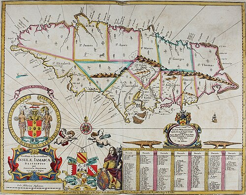
Source B: Contemporary 18th-century engraving "Maroons in Ambush on the Island of Jamaica".
Maroon warriors concealed in dense tropical foliage ambush advancing British infantry,
highlighting the power of guerrilla tactics in rugged terrain.
[2.1] When the British captured Jamaica from the Spanish in
1655, many enslaved Africans seized the chaos to escape into the impenetrable, mist-shrouded
interior of the island. These self-liberated people became known as
Maroons (derived from the Spanish word
cimarrón, meaning "wild" or
"untamed"). Over decades, the Maroons established highly organized, self-sufficient
communities in the rugged Blue Mountains of eastern Jamaica (the Windward Maroons) and the
treacherous limestone sinkholes of the Cockpit Country in western Jamaica (the Leeward
Maroons). They farmed subsistence crops, hunted wild boar, and fortified mountain redoubts
that were virtually impossible for European soldiers to reach.
[2.2]
In the 1720s and 1730s, the Windward Maroons were led by an extraordinary military and
spiritual leader:
Queen Nanny (Granny Nanny). Born into the Akan/Asante
people of modern Ghana, Nanny was a master of botanical medicine, an Obeah priestess, and a
brilliant military strategist. Nanny established a fortified mountain citadel known as
Nanny Town, perched on the edge of a sheer cliff in the Blue Mountains.
Nanny’s warriors waged asymmetric
guerrilla warfare against the British Army.
Maroon fighters perfected the art of camouflage, covering themselves entirely in tropical
leaves, vines, and sap so they were indistinguishable from the jungle until they fired. They
communicated across vast mountain valleys using the
abeng—a cow horn carved
with an acoustic mouthpiece that transmitted intricate coded musical alerts warning of British
troop movements.
[2.3] For over a decade (the First
Maroon War), the British Army sent regiment after regiment of redcoats into the mountains,
only to be systematically slaughtered in narrow defiles and mountain ambushes. Desperate to
stop the Maroons from inspiring nationwide plantation revolts, the British Governor, Edward
Trelawny, admitted military defeat. In
1739, the British Crown was forced
into the humiliating step of signing formal peace treaties with the Maroon leaders (Cudjoe in
the west and Nanny’s representatives in the east). The 1739 treaty formally recognized the
Maroons as free, autonomous people and granted them 1,500 acres of independent sovereign
land—an astonishing victory in which self-liberated Africans forced the world’s greatest
empire to recognize their freedom on their own terms.
[[SRC_MARKER:L7_Task_1_0]]Q2. Study Source B and read Act 2. Using paragraphs [2.1], [2.2], and [2.3], explain
how Queen Nanny and the Jamaican Maroons utilized guerrilla tactics to defeat the
British Army, and evaluate the historical significance of the 1739 peace treaty.
[3.1] While covert resistance was constant, open armed rebellion
erupted whenever enslaved Africans found an opportunity to strike for liberty. The first
battleground was the ocean itself. Despite being chained in pairs in lightless cargo holds,
captive Africans launched desperate, bloody mutinies aboard slave vessels during the Middle
Passage. Historical analysis of the transatlantic slave trade database reveals that
one in every ten slave voyages experienced a violent shipboard insurrection.
Captives worked secretly for weeks to slip out of iron shackles using smuggled pieces of scrap
metal, attacking crew members during meal times with heavy firewood, cooking knives, and iron
chains. Many captives chose suicide—jumping en masse into the ocean to drown—rather than
submit to perpetual enslavement.
[3.2] On land, armed
insurrections posed an existential threat to British colonial rule. In September 1739, the
largest slave uprising in the British North American colonies erupted in South Carolina: the
Stono Rebellion. Led by an enslaved literate Angolan man named
Jemmy, approximately twenty enslaved men broke into a general store near the
Stono River, seized firearms and gunpowder, and executed the storekeepers. Marching south
toward Spanish Florida—where the Spanish governor had promised freedom to any enslaved person
who fled the British—the rebels marched with beating drums and flying banners, shouting the
Kikongo cry of
"Lukango!" (Liberty!).
[3.3]
The Stono rebels were quickly joined by over eighty enslaved workers, burning seven
plantations and executing over twenty slaveholders as they marched. However, the next day, the
armed white colonial militia tracked down the rebels near the Edisto River. In a pitched gun
battle, the rebels fought fiercely, but were overwhelmed by superior firepower. Over forty
Africans were killed in the fighting, and the survivors were brutally executed, their severed
heads placed on wooden stakes along the public highway at one-mile intervals to terrorize
other enslaved people. In response, South Carolina passed the draconian
Negro Act of 1740, which outlawed enslaved literacy, prohibited drums and
large assemblies, and banned enslaved people from earning money, revealing the deep, permanent
terror that haunted white slaveholding societies.
[[SRC_MARKER:L7_Task_2_0]]Q3. Study Act 3. Using paragraphs [3.1], [3.2], and [3.3], explain why shipboard
mutinies and the Stono Rebellion of 1739 demonstrated the unceasing desire of enslaved
Africans for freedom, and analyse how colonial authorities reacted.
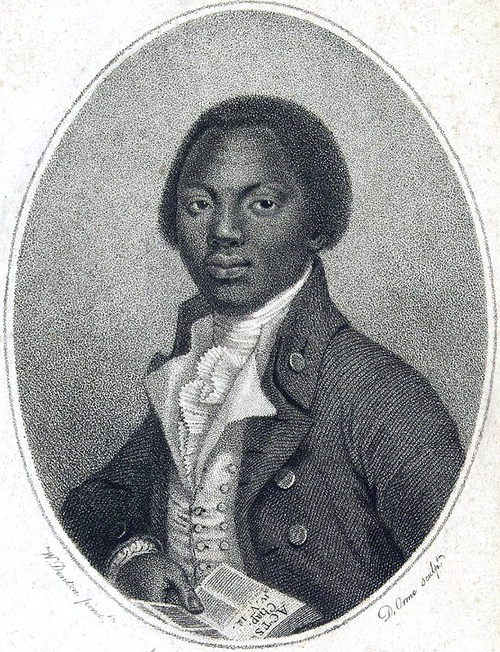
Source C: Frontispiece portrait of Olaudah Equiano from his autobiography (1789). Depicted as
a dignified, literate Christian gentleman holding an open Bible, Equiano directly dismantled
pro-slavery racist propaganda.
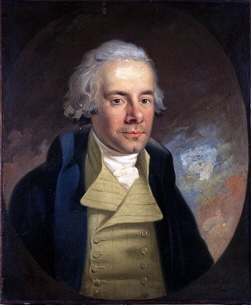
Source D: Portrait of William Wilberforce MP, who led the parliamentary campaign to abolish
the slave trade, heavily relying upon the eyewitness evidence gathered by Equiano and the Sons
of Africa.
[4.1] By the late eighteenth century, African resistance moved
directly into the political heart of the British Empire: London. Leading this intellectual and
moral counter-offensive was
Olaudah Equiano (also known by his baptismal name
Gustavus Vassa). Born in the Igbo kingdom of Essaka (in modern Nigeria) around 1745, Equiano
was kidnapped at the age of eleven, endured the Middle Passage, and spent decades as an
enslaved sailor, naval officer’s servant, and clerk in the Caribbean and North America.
Through extraordinary commercial thrift and trading small goods, Equiano managed to save £40
to buy his own legal freedom in 1766.
[4.2] Settling
in London, Equiano co-founded Britain’s first Black civil rights organisation: the
Sons of Africa, alongside fellow self-liberated African author Ottobah
Cugoano. The Sons of Africa were articulate, educated African intellectuals who held public
debates, wrote blistering letters to major newspapers, and lobbied Members of Parliament to
outlaw the slave trade. In 1789, Equiano published his masterpiece:
The Interesting Narrative of the Life of Olaudah Equiano, or Gustavus Vassa, the
African. It became an international bestseller, running through nine editions in his lifetime and
translated into multiple European languages.
[4.3]
Equiano’s autobiography was historically groundbreaking. For centuries, pro-slavery merchants
had justified chattel slavery by arguing that Africans were subhuman, devoid of culture, and
suited only for brute labor. Equiano completely destroyed these racist falsehoods with
eloquence and moral authority: he described the rich laws, agriculture, and artistic heritage
of his Igbo homeland, exposed the graphic sadism of the slave ships and Caribbean auctions
from first-hand experience, and addressed British Christians with piercing moral clarity:
"O, ye nominal Christians! might not an African ask you, Learned you this from your God,
who says unto you, Do unto all men as you would men should do unto you?"
Equiano undertook a grueling five-year book tour across England, Scotland, and Ireland,
addressing packed halls and transforming abolition from an obscure parliamentary debate into a
massive national moral crusade.
[[SRC_MARKER:L7_Task_3_0]]Q4. Study Sources C and D alongside Act 4. Using paragraphs [4.1], [4.2], and [4.3],
explain the significance of Olaudah Equiano and the Sons of Africa in shifting British
public attitudes, and analyse how their eyewitness testimonies supported the
parliamentary campaign.
Q5. Explain the significance of enslaved resistance (both covert defiance and Maroon
guerrilla warfare) in challenging the British plantation complex before 1750. [12
marks]
L9: How 'modern' was Britain by 1750? (Synthesis & Assessment)[[SRC_MARKER:L8_Start]]
Learning Objectives
Synthesise political transformations from absolute divine monarchy to constitutional
parliamentary oligarchy following the 1689 Bill of Rights.
Contrast the extraordinary imperial, mercantile, and financial power of London with acute
domestic poverty, the Bloody Code, and the Gin Craze.
Formulate a sustained, nuanced historical judgement evaluating whether Britain by 1750 can
genuinely be characterized as "modern".
Vocabulary Check
The Odd One Out: Select THREE terms that share a close historical
connection. Identify which ONE remaining term is the 'Odd One Out' in this lesson, and
explain your historical reasoning:
Constitutional Monarchy | Rotten Borough | The Bloody Code
| Gin Craze | Urbanisation | Enlightenment
Teacher Model / Pupil Reasoning:
[[SRC_MARKER:L8_Source_0]]
Source A: The Bill of Rights (1689, Key Clauses)
That the pretended power of suspending of laws, or the execution of laws, by regal
authority, without consent of parliament, is illegal... That levying money for or to the use
of the crown, by pretence of prerogative, without grant of parliament, is illegal... That
the raising or keeping a standing army within the kingdom in time of peace, unless it be
with consent of parliament, is against law... That the freedom of speech, and debates or
proceedings in parliament, ought not to be impeached or questioned in any court or place out
of parliament...
[1.1] Between 1603 and 1750, Britain underwent a momentous
constitutional transformation that permanently eliminated royal absolutism. The
seventeenth-century clashes between Crown and Parliament—the Civil Wars, the Regicide of
Charles I, and the Glorious Revolution of 1688—culminated in the
Bill of Rights 1689. This landmark constitutional statute decreed that the
monarch could not suspend laws, levy taxes without parliamentary approval, maintain a standing
army in peacetime, or interfere in parliamentary elections. Britain became Europe’s first
stable
constitutional monarchy, celebrated across the continent by
philosophers like Voltaire as a beacon of liberty and the rule of law.
[1.2]
However, this "modern" political system was not a democracy. Political power was fiercely
guarded by a tiny, wealthy elite of aristocratic landowners and commercial magnates known as
the
Whig and Tory oligarchy. Less than 5% of the adult male population had
the right to vote; women, the working poor, Catholics, and Jews were entirely excluded from
political office. The electoral system was riddled with corruption: parliamentary seats were
dominated by
rotten boroughs—ancient depopulated medieval hamlets where a
handful of voters were openly bribed or coerced by the local landlord. The most famous example
was Old Sarum in Wiltshire, an abandoned, windswept hill fort with only three houses and seven
voters that sent two Members of Parliament to Westminster, while booming commercial cities
like Manchester and Birmingham had zero MPs.
[1.3] To
protect their wealth and property against the dispossessed masses, this parliamentary
oligarchy enacted the
Bloody Code. Between 1688 and 1820, Parliament
dramatically expanded the number of capital offenses punishable by public hanging from 50 to
over 200. The law prioritized property over human life: individuals (including children as
young as nine) could be hanged at Tyburn for stealing a handkerchief worth more than a
shilling, cutting down a cherry tree in an orchard, or poaching a deer on a nobleman’s estate.
While Britain claimed to be governed by enlightened laws, the judicial system functioned as an
instrument of state terror designed to protect property owners.
[[SRC_MARKER:L8_Task_0_0]]Q1. Read Source A (The Bill of Rights extract) alongside Act 1. Using paragraphs [1.1],
[1.2], and [1.3], explain how Britain’s constitutional settlement created political
stability while simultaneously entrenching aristocratic privilege and social
control.

Source B: 18th-century painting depicting the Allegory of Britannia receiving the trade,
silks, spices, and riches of the world, escorted by Neptune, the god of the sea. It visually
encapsulates the triumphant British imperial narrative of commercial mastery.
[2.1] In 1450, England had been a small, war-torn island on the
geographical edge of the known world, completely overshadowed by the great Islamic empires and
Ming China. By 1750, Great Britain had undergone a staggering geopolitical ascent, emerging as
the dominant maritime, commercial, and imperial superpower of the globe. Following the
Act of Union 1707, which merged the kingdoms of England and Scotland into
Great Britain, the nation mobilized its combined resources under the Union Flag. Through
triumphs in the War of the Spanish Succession (1701–1714) and the Treaty of Utrecht (1713),
Britain secured vital global naval strongholds: Gibraltar and Minorca in the Mediterranean,
Nova Scotia and Newfoundland in North America, and the coveted
Asiento (the monopoly
contract to supply 4,800 enslaved Africans annually to the Spanish Empire).
[2.2]
Central to this global dominance was the
Royal Navy, shielded by the
financial power of the Bank of England and the National Debt. With over 100 heavily armed
"ships of the line" and 40,000 disciplined mariners, the Navy ruled the waves, protecting
British merchant fleets and blockading continental rivals. In Asia, the East India Company
expanded far beyond its original trading factories at Surat and Madras, commanding private
corporate armies that conquered territory, collected taxes, and secured monopoly dominance
over Indian calicoes, silk, spices, and Chinese tea. In North America, the Thirteen Colonies
expanded rapidly along the Atlantic seaboard, serving as a captive market for British
manufactured goods.
[2.3] This imperial network
transformed London into the undisputed commercial capital of the world. In 1750, the River
Thames was jammed with miles of wooden masts, carrying over 800 merchant vessels at any one
time, unloading mountains of sugar, rum, tobacco, mahogany, and tea. The national ideology of
Britannia—celebrated in James Thomson’s patriotic 1740 anthem
Rule, Britannia! ("Rule, Britannia! Britannia, rule the waves! Britons never, never,
never will be slaves!")—projected an image of a free, Protestant, enlightened empire bringing
commerce and civilization to the four corners of the earth.
[[SRC_MARKER:L8_Task_1_0]]Q2. Study Source B and read Act 2. Using paragraphs [2.1], [2.2], and [2.3], explain
how Britain transformed from a peripheral island in 1450 into a global maritime
superpower by 1750, and analyse the ironic message in the anthem "Rule,
Britannia!".
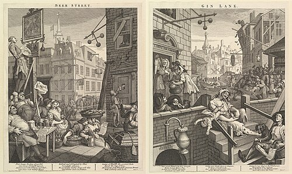
Source C: William Hogarth’s scathing satirical engraving Gin Lane (1751). Set in the
impoverished slum of St Giles, London, it depicts social collapse, neglect, infant mortality,
and despair during the peak of the Gin Craze.

Source D: Excerpt from John Rocque’s 1746 Map of London, revealing the rapid urban sprawl,
dense alleyways, and cramped courts that fueled social squalor and uncontrolled disease.
[3.1] While merchants and aristocrats accumulated immense
imperial wealth, the domestic reality for millions of ordinary Britons was defined by poverty,
squalor, and social breakdown. The eighteenth century witnessed rapid, uncontrolled
urbanisation. Rural laborers, evicted from traditional farming villages by
agricultural enclosure acts, flooded into London in search of work. By 1750, London had
exploded into Europe’s largest metropolis with a population approaching 700,000. However, the
city lacked any modern infrastructure: there were no public sewage systems, no clean piped
water, and no municipal refuse collection. Open sewers ran down the center of narrow streets,
raw excrement was dumped into cellars, and the air was perpetually choked with sulfurous black
coal smog.
[3.2] In the impoverished slums of the
East End and St Giles, life was precarious, desperate, and short. Life expectancy among the
urban working classes dropped below twenty years, with over 75% of infants born in London
dying before their fifth birthday. In this atmosphere of hopelessness, the population sought
solace in cheap alcohol, triggering the catastrophic
Gin Craze of the 1730s
and 1740s. Unregulated, highly potent corn spirit—frequently adulterated with sulfuric acid,
turpentine, and lime water—was sold in thousands of unlicenced dram shops, cellars, and
wheelbarrows across London under names like "Madam Geneva", "Cuckold’s Comfort", and "Mother’s
Ruin". Gin was cheaper than beer and safer to drink than contaminated river water. By the
1740s, Londoners were consuming an astonishing 14 gallons of gin per adult per year, causing
widespread addiction, violent crime, social collapse, and parental neglect.
[3.3]
The visual artist
William Hogarth captured this social catastrophe in his
famous 1751 engraving
Gin Lane. Published to lobby Parliament for the Gin Act
of 1751, Hogarth presented an apocalyptic vision of the parish of St Giles: in the center, a
diseased, drunken mother heedlessly drops her infant over a stair railing while taking snuff;
an emaciated ballad-seller starves to death on the steps; and desperate citizens pawn their
household cooking pans and bedding to buy more spirits. Hogarth’s companion print,
Beer Street, showed prosperous, healthy citizens drinking traditional British ale,
arguing that foreign-style commercial spirits were destroying the social fabric of the nation.
[[SRC_MARKER:L8_Task_2_0]]Q3. Study Sources C and D alongside Act 3. Using paragraphs [3.1], [3.2], and [3.3],
analyse how William Hogarth’s Gin Lane (Source C) and John Rocque’s map (Source D)
expose the "dark side" of eighteenth-century urbanisation and commercial
expansion.
[4.1] When modern historians evaluate Britain in 1750, they
confront a profound historiographical debate: to what extent can eighteenth-century Britain
genuinely be classified as a "modern" society? The answer depends heavily on which criteria of
modernity a historian prioritizes. For nineteenth-century
Whig historians (like Thomas Babington Macaulay), Britain by 1750 was the
triumphant pioneer of human progress: the glorious birthplace of constitutional parliamentary
monarchy, religious toleration, the Scientific Revolution (pioneered by Sir Isaac Newton and
the Royal Society), and dynamic capitalist free enterprise that laid the foundation for the
modern democratic world.
[4.2] In stark contrast,
Revisionist and Post-Colonial historians (like Eric Williams and modern
social historians) argue that the concept of British "modernity" in 1750 is largely an
illusion. They point out that politically, Britain remained an undemocratic aristocratic
oligarchy where 95% of men and 100% of women had no vote, and where Parliament used the savage
Bloody Code to hang starving citizens for petty property crimes. Socially, urban working
people lived in squalor and died young, abandoned by an uncaring state. Most decisively,
Britain’s global financial wealth, banking institutions, and consumer commodities were
fundamentally built upon the torture, commodification, and forced labor of over two million
enslaved Africans in the transatlantic slave trade.
[4.3]
The truth is that Britain in 1750 was a deeply contradictory society characterized by
dual realities. It stood at the dawn of the Industrial Revolution: an
intellectual and commercial superpower possessing sophisticated financial institutions, global
maritime reach, and constitutional stability, yet simultaneously a nation bound to pre-modern
cruelty, grotesque domestic inequality, and brutal colonial exploitation. Understanding early
modern Britain requires holding these two contradictory realities together in tension.
[[SRC_MARKER:L8_Task_3_0]]Q4. Study Act 4. Using paragraphs [4.1], [4.2], and [4.3], explain why historians hold
competing interpretations regarding whether Britain by 1750 was truly "modern", and
evaluate which historical perspective you find more convincing.
Q5. ‘By 1750, Britain had become an enlightened, modern global superpower.’ How far do
you agree with this statement? [16 marks + 4 SPaG]
Generated: 2026-09-12 11:04:33 UTC | Unit: early_modern_world